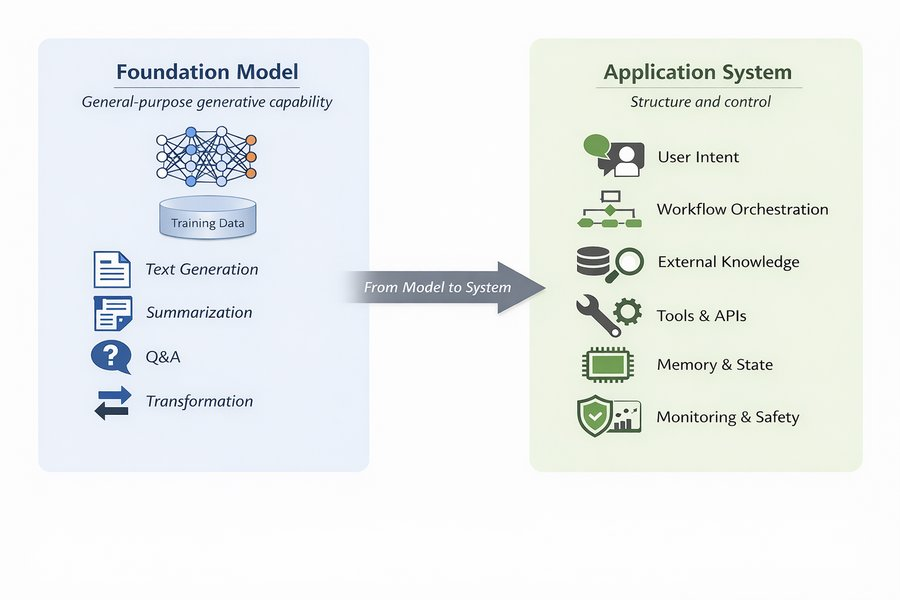

O hospital começou um projeto-piloto. Em todos os computadores da unidade de terapia intensiva há agora um assistente de diretrizes: uma caixa em que a equipe pode digitar uma pergunta em linguagem comum e receber uma resposta em poucos segundos. Seán, o farmacêutico da unidade, experimenta-o esta noite com um problema real. A Sra. Aoife Byrne, de 71 anos, internada com sepse, está recebendo vancomicina e piperacilina–tazobactam, e a creatinina dela subiu de 1,0 para 1,4 mg/dL em 36 horas. Ele digita: “Devemos trocar a vancomicina, e com que frequência devemos dosar a creatinina?”
A resposta chega na hora: seis itens numerados, confiantes, bem escritos, com a referência de um periódico no final. A Dra. Emma Walsh, a intensivista, lê por cima do ombro dele. Quase tudo parece correto. Uma linha, não: “suspenda imediatamente a vancomicina e substitua-a por gentamicina”. E nenhum dos dois jamais ouviu falar daquele periódico.
Ao longo de todo este livro, Emma usou modelos de risco para decidir se Aoife precisa do pacote de proteção renal. Um modelo lhe dava um número; ela sabia de onde ele vinha e qual era a sua acurácia. Isto é diferente. Do que é feito esse sistema? Quando Seán deve acreditar nele? Quem é responsável se ele seguir a resposta, e o hospital tinha sequer permissão para instalá-lo? Este capítulo responde a essas perguntas.
Por trás do assistente de diretrizes há vários componentes diferentes. Classifique cada um como parte do próprio modelo de linguagem, da etapa de recuperação que busca informações, uma ferramenta que o sistema pode acionar ou supervisão humana. Arrisque um palpite; o capítulo explica cada termo.
Componente
Seu rótulo
Um transformer treinado com uma coleção enorme de textos para prever a próxima palavra.
Uma busca nos documentos de diretrizes do hospital que devolve os três parágrafos mais relevantes para cada pergunta.
Uma calculadora que, quando solicitada, calcula a depuração de creatinina com a equação de Cockcroft–Gault.
Seán confere cada dose sugerida antes que ela seja escrita na prescrição.
Um treinamento adicional em que pessoas compararam pares de respostas, para que o modelo aprendesse a seguir instruções com educação e a recusar pedidos inseguros.
Como usar este capítulo
Começando por aqui?
Este capítulo reúne ideias de muitos capítulos anteriores. Em resumo:
Decisões e qualidade da decisão (Definição 1.4, Seção 1.5). Uma decisão escolhe uma alternativa de um conjunto \(\mathcal{A}\) com base em um estado de conhecimento \(\mathcal{K}\). A qualidade da decisão é uma corrente de seis elos (enquadramento, alternativas, informação, valores, raciocínio, compromisso), e uma decisão é tão forte quanto o seu elo mais fraco. No Capítulo 1, a equipe da UTI Ala 7 decidiu que vale a pena iniciar o pacote de proteção renal quando o risco de Aoife de desenvolver lesão renal aguda (LRA) estiver acima de 0,25.
Máquinas verificam consistência, não verdade (Seção 1.6). Um sistema que produz texto plausível não o confrontou com o mundo.
Texto como vetores (Capítulo 15). Um documento vira um vetor de pesos de palavras; com TF-IDF, pesam mais as palavras frequentes em um documento mas raras na coleção, e dois documentos são comparados pelo cosseno do ângulo entre os seus vetores.
Modelos de linguagem (Capítulo 16). Um modelo de linguagem atribui uma probabilidade a cada próximo token possível \(w_t\) dados os tokens anteriores, \(P(w_t \mid w_{<t})\); ele é treinado minimizando a entropia cruzada dos próximos tokens reais e gera texto por amostragem, com uma temperatura que controla o quanto a amostragem é ousada. Embeddings são vetores aprendidos nos quais palavras de significado parecido ficam próximas.
O transformer (Capítulo 17). A atenção permite que cada posição olhe para todas as posições anteriores; uma pilha de blocos transformer com máscara causal, treinada para prever o próximo token, é um modelo somente decodificador (decoder-only) da família GPT.
Aprendizado por transferência (Capítulo 7): uma rede treinada em um conjunto de dados grande passa por ajuste fino em um menor. Calibração (Capítulo 5): um modelo é calibrado se, entre os casos aos quais ele atribui 80 %, cerca de 80 % são positivos. Abstenção (Capítulo 8): um modelo que sabe o quanto está incerto pode encaminhar os casos difíceis a uma pessoa.
Aprendizado por reforço (Capítulo 14): um agente segue uma política\(\pi\) e aprende com recompensas. Ensaios randomizados (Capítulo 13) são a evidência mais forte de que um tratamento funciona.
Exemplo
Quem ou o quê
Desfecho
Rostos que você vai conhecer
1UTI Ala 7
1.250 pacientes de UTI em 4 hospitais
variação da creatinina em 48 h (lesão renal aguda se ≥ 0,3 mg/dL)
Aoife (71 anos, sepse, risco limítrofe), Tomás (54 anos, risco baixo), Priya (38 anos, risco alto); a Dra. Emma Walsh; Seán, o farmacêutico
2Ensaio ONCO-1
1.000 pacientes randomizados para quimioterapia ou não
redução do tumor (%)
pacientes #0042 e #0917
3HomeBeat
500 pessoas que usam um relógio inteligente em casa
escore de estresse, evento de deterioração
Lena
4CellWorks
420 lotes de produção de uma terapia celular
escore de potência
lote CW-118
Os quatro conjuntos de dados são simulados e podem ser baixados no apêndice de dados. A apresentação completa está na Seção 1.1.
Este capítulo acompanha um modelo de linguagem para fora do laboratório e para dentro da unidade de internação. Você vai ver como um preditor da próxima palavra se transforma em um assistente, como prompts, recuperação e ferramentas moldam o que ele faz, como avaliá-lo e flagrá-lo inventando coisas, quais leis se aplicam a ele, como a IA ajudou a levar um novo medicamento a um ensaio clínico e onde a IA se encaixa na corrente da qualidade da decisão do Capítulo 1. Ele tem onze seções e um Lab, oito verificações rápidas, três widgets “Experimente”, um desafio e três missões de programação em R e Python. Reserve cerca de duas horas. Nenhum modelo de linguagem roda neste capítulo: todas as respostas que você vai ler foram escritas de antemão, e todos os números vêm de arquivos pequenos que você pode baixar e conferir.
Notação em resumo (apenas para consulta)
Símbolo
Significado
Seção
\(w_t\), \(w_{<t}\)
o token na posição \(t\); todos os tokens anteriores a ele
Os Capítulos 15 a 17 construíram um modelo de linguagem desde a base: o texto virou tokens e vetores, um modelo aprendeu a atribuir uma probabilidade a cada próximo token possível, e o transformer tornou esse modelo grande e rápido. Ampliado e treinado com uma grande parte do mundo escrito, um modelo assim consegue continuar uma frase, resumir um documento, responder a uma pergunta ou traduzir um parágrafo, tudo isso calculando repetidamente \(P(w_t \mid w_{<t})\) e escolhendo um próximo token. Modelos desse tipo são hoje chamados de modelos de fundação.
Definição 19.1 (Modelo de fundação) Um modelo de fundação (foundation model) é um modelo grande, treinado com dados amplos, geralmente por autossupervisão em grande escala, que pode ser adaptado a uma vasta gama de tarefas posteriores (Bommasani et al. 2021). Um grande modelo de linguagem (LLM, de large language model) é um modelo de fundação para texto; a maioria dos LLMs atuais são transformers somente decodificadores (Capítulo 17; Vaswani et al. (2017)) com bilhões de parâmetros.
Um modelo de fundação fornece capacidade. Ele não fornece, por si só, aquilo de que uma unidade precisa: respostas apoiadas nas diretrizes deste hospital, aritmética exata para uma dose, um registro de quem perguntou o quê, uma maneira de dizer “não sei” e uma pessoa que confere antes que qualquer coisa chegue a um paciente. Essas coisas vêm do sistema construído em torno do modelo (Figura 19.1): uma interface que capta o que o usuário quer, um fluxo de trabalho que decide as etapas, acesso a conhecimento externo, ferramentas, memória da conversa e monitoramento.

Figura 19.1: Do modelo de fundação ao sistema de aplicação. O modelo fornece geração de uso geral (textos, resumos, respostas, transformações); o sistema acrescenta a intenção do usuário, a orquestração do fluxo de trabalho, o conhecimento externo, as ferramentas, a memória e o monitoramento.
Essa distinção organiza o capítulo inteiro. Um modelo prevê o que provavelmente vem a seguir; um sistema organiza essas predições em um comportamento que serve a um propósito. Muitas das falhas que viram manchete (afirmações fluentes que são falsas, fatos desatualizados, respostas impossíveis de conferir) não são defeitos do transformer. São o que se deve esperar de um gerador probabilístico de texto usado sem a estrutura ao seu redor (Thirunavukarasu et al. 2023). O assistente de Seán, como veremos, tem um modelo no seu centro; se ele é seguro depende sobretudo de todo o resto.
19.2 Como se faz um modelo de fundação
O modelo dentro do assistente de Seán passou por três etapas de treinamento (Figura 19.2). Cada etapa usa um tipo diferente de dados e muda o comportamento do modelo de uma maneira diferente.
Figura 19.2: As três etapas que transformam um transformer em um modelo assistente.
19.2.1 Etapa 1: pré-treinamento
Definição 19.2 (Pré-treinamento, corpus de pré-treinamento e leis de escala) O pré-treinamento ajusta um modelo de linguagem a um corpus de pré-treinamento muito grande (páginas web, livros, artigos científicos, código), minimizando a entropia cruzada do próximo token, exatamente o objetivo do Capítulo 16: \[
\mathcal{L}_{\text{pre}}(\theta) = -\sum_{t} \log P_\theta(w_t \mid w_{<t}) .
\qquad(19.1)\] As leis de escala (scaling laws) são a constatação empírica de que essa perda cai de forma suave e previsível, como uma lei de potência, à medida que crescem o número de parâmetros, a quantidade de dados e o orçamento computacional (Kaplan et al. 2020; Hoffmann et al. 2022).
Nada em Equação 19.1 menciona medicina, verdade ou utilidade. O modelo é recompensado por prever o texto que costuma vir a seguir. Para prever bem a próxima palavra de um livro de farmacologia, ele precisa absorver muita farmacologia, e é por isso que os modelos grandes “sabem” tanto (Brown et al. 2020). Mas ele também aprende o que for comum no seu corpus, inclusive práticas ultrapassadas, erros e preconceitos, e não aprende absolutamente nada sobre o que aconteceu depois que o corpus foi coletado. Um modelo base que passou apenas pelo pré-treinamento não responde a perguntas; ele continua o texto. Pergunte a ele “Qual é o vasopressor de primeira linha no choque séptico?” e ele pode muito bem responder com mais três questões de prova, porque é isso que costuma vir depois de uma linha assim na web.
19.2.2 Etapa 2: ajuste por instruções
Definição 19.3 (Ajuste por instruções) O ajuste por instruções (instruction tuning, ou ajuste fino supervisionado) continua o treinamento de um modelo pré-treinado em uma coleção de prompts \(x\) pareados com boas respostas \(y\) escritas por pessoas, minimizando a entropia cruzada dos tokens da resposta dado o prompt, \(-\sum_{t \in y} \log P_\theta(w_t \mid x, w_{<t})\)(Wei, Bosma, et al. 2022; Ouyang et al. 2022).
O objetivo é o mesmo de antes; só os dados mudam. Alguns milhares de exemplos da forma “instrução → resposta útil” bastam para transformar um continuador de texto em um modelo que faz o que lhe pedem, porque a capacidade já estava lá e só o formato do comportamento precisa ser aprendido. É o aprendizado por transferência (Capítulo 7) aplicado ao comportamento.
19.2.3 Etapa 3: ajuste por preferências
Para as pessoas, é mais fácil dizer qual de duas respostas é melhor do que escrever a resposta perfeita. O ajuste por preferências explora isso. Avaliadores humanos veem um prompt \(x\) e duas respostas, \(y_A\) e \(y_B\), e dizem qual preferem. Um modelo de recompensa\(r(x, y)\), ele próprio uma rede neural, é treinado para que as respostas preferidas recebam pontuações mais altas, usando o modelo de Bradley–Terry para comparações pareadas (Bradley e Terry 1952): \[
P(y_A \text{ preferida a } y_B \mid x) = \sigma\big(r(x, y_A) - r(x, y_B)\big),
\qquad(19.2)\] em que \(\sigma\) é a função logística do Capítulo 5. O modelo de recompensa é, literalmente, uma regressão logística sobre a diferença de duas pontuações.
Vem então a etapa que dá nome ao método. O modelo de linguagem passa a ser visto como uma política\(\pi_\theta\) (Capítulo 14): dado um estado (o prompt), ele escolhe ações (tokens) e, ao final de uma resposta, recebe uma recompensa \(r(x, y)\). O aprendizado por reforço ajusta \(\theta\) para obter mais recompensa, enquanto uma penalidade mantém a nova política perto do modelo ajustado por instruções, \(\pi_{\text{ref}}\): \[
\max_\theta \;\; \mathbb{E}_{y \sim \pi_\theta(\cdot \mid x)}\big[r(x, y)\big] \;-\; \lambda\, \mathrm{KL}\big(\pi_\theta \,\|\, \pi_{\text{ref}}\big).
\qquad(19.3)\] O termo KL (uma medida de quão diferentes são duas distribuições de probabilidade (Kullback e Leibler 1951)) impede que o modelo derive para textos estranhos que por acaso enganam o modelo de recompensa; \(\lambda\) define com que intensidade.
Definição 19.4 (Ajuste por preferências: RLHF e DPO) O aprendizado por reforço a partir de feedback humano (RLHF) treina um modelo de recompensa com comparações humanas de respostas (Equação 19.2) e depois otimiza o modelo de linguagem, visto como uma política, para maximizar essa recompensa com uma penalidade por se afastar demais do modelo de partida (Equação 19.3), geralmente com o algoritmo PPO (Christiano et al. 2017; Schulman et al. 2017; Ouyang et al. 2022). A otimização direta de preferências (DPO) chega a um resultado semelhante sem um modelo de recompensa separado nem aprendizado por reforço, ajustando a política diretamente às comparações com uma perda logística (Rafailov et al. 2023).
O ajuste por preferências é o motivo pelo qual os assistentes são educados, organizados e dispostos a dizer “consulte um profissional de saúde”. É também o motivo pelo qual podem ser bajuladores e excessivamente confiantes: os avaliadores tendem a preferir respostas fluentes, completas e seguras de si, e o modelo aprende a dar às pessoas aquilo que elas recompensam (Sharma et al. 2024). O ajuste por preferências molda estilo e cautela; ele não acrescenta conhecimento que faltava ao modelo e não faz o modelo verificar fatos.
As diretrizes do hospital foram atualizadas no mês passado. Qual etapa de treinamento ensinaria a nova diretriz ao modelo?
19.3 Prompts: direcionar sem retreinar
A maneira mais simples de usar um modelo é dar a ele um prompt e ler a resposta. Um prompt não programa o modelo no sentido clássico: ele não define nenhuma sequência de operações. Ele muda o contexto\(w_{<t}\) sobre o qual cada probabilidade do próximo token é calculada e, com isso, remodela toda a distribuição da qual a resposta é sorteada. O mesmo modelo se comporta de maneira muito diferente conforme o contexto é formulado.
Definição 19.5 (Prompt, prompt de sistema, prompts few-shot e de cadeia de pensamento) Um prompt é o texto dado a um modelo de linguagem como contexto para a sua resposta. As aplicações costumam antepor um prompt de sistema que o usuário não vê, definindo o papel, as regras e o formato (“Você é o assistente de diretrizes da UTI Ala 7. Responda apenas com base nos trechos fornecidos…”). O prompt zero-shot traz apenas a instrução; o prompt few-shot acrescenta ao prompt alguns exemplos resolvidos da tarefa (Brown et al. 2020); o prompt de cadeia de pensamento (chain-of-thought) pede, ou demonstra, etapas intermediárias de raciocínio antes da resposta (Wei, Wang, et al. 2022).
Pegue o pedido “Explique o papel do TNF-alfa na inflamação.” Sem nenhuma outra instrução, o modelo produz uma explicação geral. “Explique o papel do TNF-alfa na inflamação em três tópicos, para um estudante do primeiro ano de medicina” produz algo mais curto e mais simples; “Resuma o papel do TNF-alfa na inflamação usando apenas vias mecanísticas” produz algo mais denso. A tarefa é a mesma; a formulação desloca a paisagem de probabilidades. Um prompt few-shot para o assistente de Seán poderia mostrar dois exemplos de uma pergunta, o trecho da diretriz em que ela se apoia e uma resposta que cita esse trecho, para que o modelo imite o padrão.
Três fatos sobre prompts importam na prática. Primeiro, as saídas são sensíveis à redação, à ordem das informações e à temperatura de amostragem do Capítulo 16: a mesma pergunta feita duas vezes pode receber duas respostas diferentes, então qualquer avaliação precisa usar prompts fixos e execuções repetidas. Segundo, o texto da cadeia de pensamento não é uma janela para o modo como a resposta foi calculada; é mais texto gerado, útil para conferir, mas sem garantia de ser o verdadeiro motivo da resposta (Turpin et al. 2023). Terceiro, um único prompt precisa carregar tanto a tarefa quanto o procedimento, e, à medida que as tarefas crescem, ele se torna frágil.
O encadeamento de prompts (prompt chaining) trata do terceiro ponto dividindo uma tarefa em etapas, cada uma uma chamada separada cuja saída alimenta a seguinte. Passando de explicar o TNF-alfa a propor uma terapia, uma cadeia poderia (1) produzir uma explicação estruturada da via, (2) identificar os pontos em que a via poderia ser bloqueada, (3) reunir o que se sabe sobre os inibidores existentes e as suas evidências clínicas e (4) sintetizar uma proposta. Cada saída intermediária pode ser inspecionada, corrigida ou rejeitada, de modo que um erro pode ser localizado na etapa em que surgiu, em vez de ficar enterrado em uma resposta opaca. A etapa 3, porém, pede fatos, exatamente o que um modelo de linguagem sozinho não consegue garantir. A próxima seção mostra como um sistema os fornece.
19.4 Geração aumentada por recuperação
O conhecimento de um modelo de linguagem fica congelado nos seus parâmetros ao final do treinamento, ele não consegue dizer de onde veio um fato e não sabe nada sobre as regras locais da UTI Ala 7. O remédio mais usado é buscar os fatos primeiro e entregá-los ao modelo junto com a pergunta (Lewis et al. 2020).
Definição 19.6 (Geração aumentada por recuperação (RAG), trecho, recuperador, fundamentação) Na geração aumentada por recuperação (RAG, de retrieval-augmented generation), um sistema responde a uma pergunta em três etapas: um recuperador (retriever) faz uma busca em uma coleção de documentos, divididos em passagens curtas chamadas trechos (chunks), e devolve os \(k\) trechos mais semelhantes à pergunta; os trechos são inseridos no prompt com instruções para responder com base neles; o modelo de linguagem gera a resposta (Lewis et al. 2020). Uma resposta é fundamentada (grounded) quando cada afirmação dela é sustentada pelos trechos recuperados, idealmente com uma citação do trecho que a sustenta.
Figura 19.3: Geração aumentada por recuperação no assistente de diretrizes da UTI Ala 7.
O recuperador não é novidade para você. No Capítulo 15, um documento virou um vetor TF-IDF e dois documentos foram comparados pelo cosseno do ângulo entre os seus vetores (Spärck Jones 1972; Salton e Buckley 1988). A RAG usa exatamente isso, com a pergunta fazendo o papel de um documento muito curto. Para cada um dos \(J\) trechos e cada palavra \(w\), o peso é a contagem da palavra no trecho vezes a sua frequência inversa nos documentos, \(\mathrm{idf}(w) = \ln\!\big((1 + J)/(1 + \mathrm{df}(w))\big) + 1\), em que \(\mathrm{df}(w)\) é o número de trechos que contêm \(w\); palavras raras pesam mais. A pontuação do trecho \(j\) para a consulta é \[
\text{pontuação}(\mathbf{q}, \mathbf{d}_j) = \frac{\mathbf{q} \cdot \mathbf{d}_j}{\lVert \mathbf{q} \rVert \, \lVert \mathbf{d}_j \rVert} ,
\qquad(19.4)\] e, se todos os vetores tiverem sido escalados para comprimento 1, a pontuação é simplesmente o produto escalar. Sistemas em produção costumam substituir os vetores TF-IDF por embeddings densos gerados por uma rede neural (Capítulo 16), para que “renal” possa corresponder a “rim” (Karpukhin et al. 2020), ou combinam os dois; a lógica do fluxo é a mesma.
O assistente da UTI Ala 7 faz buscas em uma pequena coleção de 31 trechos de 11 documentos locais: o pacote de LRA, as diretrizes de vancomicina e de gentamicina, a diretriz de sepse, alguns procedimentos dos outros exemplos recorrentes e assim por diante. A coleção foi escrita para este livro, para ilustrar a recuperação, e está em inglês; ela não é orientação clínica. Você pode ler cada trecho no arquivo de dados.
Inspecione o recuperador. Escolha uma pergunta, ou digite a sua, e veja quais trechos o recuperador TF-IDF devolve, com as suas pontuações de cosseno; as palavras que coincidem com a consulta aparecem destacadas. Como as diretrizes estão em inglês, as perguntas também precisam ser escritas em inglês. Logo abaixo, abra o prompt que o sistema enviaria ao modelo de linguagem. Meta: experimente pelo menos três perguntas, incluindo “What is the maximum dose of rentosertib?” (“Qual é a dose máxima de rentosertib?”; o rentosertib é um medicamento que encontraremos na Seção 19.9 e que não aparece em nenhum lugar das diretrizes). Observe o que o recuperador devolve.
ragCorpus =FileAttachment("data/ch19_guidelines.csv").csv()ragIndex = {const stop =newSet(["a","an","and","are","as","at","be","by","can","do","does","for","from","has","have","how","i","if","in","is","it","its","not","of","on","or","our","should","so","that","the","their","them","then","there","these","they","this","to","was","we","what","when","which","while","who","will","with","without","you","been","into","than","after","before","more","most","also","all","any","every","each","may","only","other","such","whenever","where","one","two"]);const tok = s => s.toLowerCase().split(/[^a-z0-9]+/).filter(w => w.length>=2&&!stop.has(w));const docs = ragCorpus.map(d =>tok(d.section+" "+ d.text));const J = docs.length, df =newMap(); docs.forEach(ws =>newSet(ws).forEach(w => df.set(w, (df.get(w) ||0) +1)));const idf =newMap([...df].map(([w, n]) => [w,Math.log((1+ J) / (1+ n)) +1]));const vec = ws => {const v =newMap(); ws.forEach(w => { if (idf.has(w)) v.set(w, (v.get(w) ||0) +1); });let ss =0;for (const [w, c] of v) { const x = c * idf.get(w); v.set(w, x); ss += x * x; }const n =Math.sqrt(ss);if (n >0) for (const [w, x] of v) v.set(w, x / n);return v; };return {tok,vecs: docs.map(vec),query: q =>vec(tok(q))};}viewof ragPreset = Inputs.select(newMap([ ["A pergunta de Seán (cena de abertura)","Mrs Byrne is on vancomycin and piperacillin-tazobactam, and her creatinine rose from 1.0 to 1.4 mg/dL in 36 hours. Should we change the vancomycin, and how often should we check creatinine?"], ["How often should creatinine be checked while the bundle is active?","How often should creatinine be checked while the bundle is active?"], ["Should vancomycin be stopped when creatinine is rising?","Should vancomycin be stopped when creatinine is rising?"], ["Can gentamicin be used in acute kidney injury?","Can gentamicin be used in acute kidney injury?"], ["Which renal-protective medicines must be withheld?","Which renal-protective medicines must be withheld?"], ["Can a batch that failed the potency test be released?","Can a batch that failed the potency test be released?"], ["What is the maximum dose of rentosertib?","What is the maximum dose of rentosertib?"]]), {label:"Escolha uma pergunta"})viewof ragQuery = Inputs.text({value: ragPreset,label:"…ou edite-a (em inglês)",width:560})viewof ragK = Inputs.range([1,5], {value:3,step:1,label:"Trechos recuperados, k"})ragHits = {const qv = ragIndex.query(ragQuery);const scored = ragCorpus.map((d, j) => {let s =0;for (const [w, x] of qv) s += x * (ragIndex.vecs[j].get(w) ||0);return {...d,score: s}; });return {qterms:newSet(qv.keys()),hits: scored.sort((a, b) => b.score- a.score).slice(0, ragK)};}{const esc = s => s.replace(/&/g,"&").replace(/</g,"<");const mark = t =>esc(t).replace(/[A-Za-z0-9]+/g, m => ragHits.qterms.has(m.toLowerCase()) ?`<mark>${m}</mark>`: m);const div =document.createElement("div"); div.innerHTML= ragHits.qterms.size===0?"<p><em>Nenhuma das palavras desta pergunta aparece nas diretrizes: todas as pontuações são 0.</em></p>": ragHits.hits.map((h, i) =>`<div style="border:1px solid var(--aihs-border);border-radius:8px;padding:0.45rem 0.7rem;margin:0.4rem 0"> <strong>${i +1}. [${h.chunk_id}]</strong> ${esc(h.document)}, <em>${esc(h.section)}</em> <span style="float:right">pontuação <strong>${h.score.toFixed(3)}</strong> <span style="display:inline-block;width:80px;height:8px;border-radius:4px;background:var(--aihs-border);vertical-align:middle;overflow:hidden"> <span style="display:block;height:100%;width:${Math.min(100,100* h.score)}%;background:var(--aihs-accent)"></span></span></span> <div style="font-size:0.92em;margin-top:0.25rem">${mark(h.text)}</div></div>`).join("");return div;}
{const p = ["Você é o assistente de diretrizes da UTI Ala 7. Responda SOMENTE com base nos trechos numerados abaixo.","Cite o identificador do trecho em cada afirmação. Se os trechos não contiverem a resposta,","diga que as diretrizes não tratam do assunto e sugira consultar o farmacêutico da unidade.",""].concat(ragHits.hits.map(h =>`[${h.chunk_id}] ${h.text}`)).concat(["","Pergunta: "+ ragQuery]).join("\n");const det =document.createElement("details"); det.innerHTML="<summary>Mostrar o prompt que o sistema enviaria ao modelo de linguagem</summary>";const pre =document.createElement("pre"); pre.style.whiteSpace="pre-wrap"; pre.style.fontSize="0.85em"; pre.textContent= p; det.appendChild(pre);return det;}
ragSeen =newSet(){ ragSeen.add(ragQuery.trim().toLowerCase());const done = ragSeen.size>=3&& [...ragSeen].some(q => q.includes("rentosertib"));if (done &&window.aihs) window.aihs.complete("ch19-tryit-rag");returnhtml`<p style="font-size:0.92em">Perguntas experimentadas: <strong>${ragSeen.size}</strong>${done ?". ✓ Ponto de controle alcançado: agora leia o texto abaixo do widget.":""}</p>`;}
Três lições saem do inspetor, e cada uma é um modo de falha de sistemas RAG reais.
O recuperador sempre devolve alguma coisa. Para a pergunta sobre o rentosertib, o trecho do topo é VAN-1, com pontuação de 0,497, maior do que a pontuação do trecho certo para a pergunta sobre monitoramento (AKI-4, 0,343). Ele coincide apenas porque ambos contêm a palavra dose. Um limiar de pontuação, sozinho, não distingue o relevante do irrelevante; a instrução “se os trechos não contiverem a resposta, diga isso” e uma verificação da resposta contra os trechos é que precisam fazer esse trabalho.
Palavras não são significados.“Which renal-protective medicines must be withheld?” (“Quais medicamentos de proteção renal devem ser suspensos?”) não encontra nada útil (melhor pontuação 0,130): a diretriz diz kidney, nephrotoxic, hold e pause, nunca renal-protective nem withheld. Os embeddings densos reduzem esse problema; não o eliminam.
O que não é recuperado não pode ser usado. Escolha a própria pergunta de Seán, da cena de abertura: o recuperador devolve VAN-5, VAN-4, LAB-2, mas não a regra de monitoramento do pacote (AKI-4), porque a pergunta usa check (“verificar”) e a diretriz diz measured (“medida”). Uma resposta construída sobre esses trechos ficará calada, ou errada, sobre a frequência com que se deve medir a creatinina.
Outros modos de falha não aparecem em uma coleção pequena: trechos de versões diferentes de uma diretriz que se contradizem, uma passagem cortada no meio de uma tabela, modelos que dão menos atenção às passagens no meio de um prompt longo (Liu et al. 2024) e documentos que contêm instruções ocultas dirigidas ao modelo, que ele pode obedecer, a chamada injeção de prompt (prompt injection) (Greshake et al. 2023). A RAG transfere o problema de saber para o problema de encontrar, e encontrar pode ser testado, e essa é a sua grande vantagem.
Para a pergunta sobre o rentosertib, o recuperador devolve um trecho sobre vancomicina com uma pontuação razoavelmente alta. O que um assistente bem projetado deve fazer?
Seja o recuperador. Os trechos das diretrizes já estão indexados: X contém um vetor TF-IDF por trecho, cada um escalado para comprimento 1, e embed() transforma uma pergunta em um vetor do mesmo espaço. Como todos os vetores têm comprimento 1, multiplicar X pelo vetor da consulta dá a pontuação de cosseno de cada trecho (Equação 19.4). Preencha a lacuna com a função que devolve a posição da maior pontuação, para que a última linha imprima o identificador do melhor trecho.
O nome da função já diz tudo: qual (which) elemento é o máximo.
best <-which.max(scores)
A função do numpy é o argumento do máximo.
best =int(np.argmax(scores))
19.5 Ferramentas, agentes e protocolos
Algumas etapas não deveriam ser feitas por um modelo de linguagem. A pergunta de Seán precisa da depuração de creatinina de Aoife, que é aritmética (Cockcroft e Gault 1976); um modelo que prevê dígitos um token de cada vez pode errar uma conta, uma calculadora não. Outras etapas precisam de dados que o modelo não tem: os resultados de laboratório de hoje, o formulário terapêutico atual, uma base de dados de interações medicamentosas.
Definição 19.7 (Uso de ferramentas e agente) No uso de ferramentas (tool use), o modelo de linguagem não calcula a resposta ele próprio, mas escreve uma solicitação estruturada, como “chame creatinine_clearance com idade 71, peso 68 kg, creatinina 1,4 mg/dL, sexo feminino”, que o sistema executa com software comum e determinístico; o resultado é devolvido ao contexto e o modelo continua (Schick et al. 2023). Um agente é um sistema em que o modelo também decide, enquanto a tarefa se desenrola, qual etapa realizar em seguida (se deve recuperar, acionar uma ferramenta, dividir a tarefa ou parar), geralmente alternando etapas curtas de raciocínio com ações (Yao et al. 2023).
Voltando à cadeia do TNF-alfa da Seção 19.3: verificar se o TNF-alfa é um alvo validado, listar os inibidores conhecidos com a sua situação clínica ou estimar uma propriedade farmacocinética são tarefas para bases de dados curadas e calculadoras. O papel do modelo muda: em vez de produzir a resposta, ele passa a coordenar um processo que combina geração com cálculo determinístico e conhecimento externo.
A diferença entre uma cadeia fixa e um agente é o grau de liberdade do sistema (Figura 19.4). Uma cadeia executa sempre as mesmas etapas, na mesma ordem: previsível, fácil de testar, às vezes desperdiçadora. Um agente se adapta: pode decidir que já sabe o bastante, ou que precisa recuperar, calcular ou dividir a tarefa em subtarefas; pode esboçar um plano, executá-lo e conferir o próprio trabalho.
Figura 19.4: Fluxos de trabalho encadeados versus agênticos. Uma cadeia executa etapas fixas em uma ordem fixa; um agente decide durante a execução se deve recuperar, acionar uma ferramenta ou dividir a tarefa.
A liberdade tem um preço. Os planos podem ser ruins; os agentes dão passos desnecessários, repetem trabalho ou se perdem; a autoverificação não é confiável quando o mesmo modelo gera e julga; e pequenos erros se acumulam ao longo de muitas etapas. Cada ferramenta que um agente pode acionar é também uma ação que ele pode executar de forma errada, ou ser induzido a executar por um texto que lê (de novo, a injeção de prompt). Em um hospital, a regra prática é simples: quanto mais um agente pode fazer (escrever no prontuário, emitir uma prescrição, contatar um paciente), mais estreitas devem ser as suas permissões, mais completos os seus registros e mais garantido que uma pessoa aprove cada ação com consequências.
Muitos agentes, e os protocolos que os conectam. Tarefas complexas às vezes são divididas entre vários agentes especializados (um recupera, outro analisa, outro redige, outro verifica), como uma pequena equipe. Dois protocolos abertos, ambos introduzidos recentemente, padronizam as conexões (Figura 19.5). O Model Context Protocol (MCP) define como um agente descobre e usa capacidades externas, que ele agrupa em recursos (dados), ferramentas (ações e cálculos) e prompts (modelos reutilizáveis), de modo que um único conector do hospital para, digamos, o formulário terapêutico possa servir a qualquer assistente compatível com MCP (Model Context Protocol 2026). Os protocolos agente a agente (A2A) definem como agentes de fornecedores diferentes descrevem uns aos outros as suas habilidades, delegam tarefas e trocam resultados (A2A Project 2026). Nenhum dos dois decide o que um sistema deve fazer: o MCP padroniza o acesso, o A2A padroniza a conversa, e a orquestração continua sendo uma escolha de projeto, e uma responsabilidade.
Figura 19.5: Dois padrões complementares. À esquerda: pelo Model Context Protocol (MCP), os agentes alcançam recursos, ferramentas e prompts compartilhados. À direita: com a comunicação agente a agente (A2A), agentes especializados trocam informações e tarefas diretamente.
Os projetos com vários agentes compensam quando uma tarefa realmente se divide em papéis distintos; para a maioria das perguntas clínicas, uma única cadeia bem testada, com recuperação e uma ou duas ferramentas, é mais fácil de avaliar, monitorar e merecer confiança.
Onde esses sistemas são usados. O mesmo padrão, um modelo dentro de um fluxo de trabalho com recuperação e ferramentas, aparece onde quer que a IA generativa seja implantada: perguntas em linguagem natural traduzidas em consultas a bases de dados e buscas na literatura (Figura 19.6), assistentes de programação que leem um repositório e executam os seus testes, assistentes que respondem às perguntas da equipe a partir de documentos internos, redação de material de marketing ou de informação ao paciente sob revisão. Na saúde e nas ciências da vida, a lista inclui apoio à leitura da literatura, resumo de anotações clínicas, informação farmacológica, extração de dados estruturados de laudos e análise de relatos de eventos adversos (Thirunavukarasu et al. 2023). Em todos os casos, o valor vem menos do modelo do que do sistema em que ele está inserido.
Figura 19.6: Da pergunta à resposta fundamentada: o sistema traduz uma pergunta em linguagem natural em consultas a dados estruturados e em buscas em documentos, e depois agrega e sintetiza os resultados.
No assistente de Seán, qual tarefa deveria ser entregue a uma ferramenta em vez de ficar com o modelo de linguagem?
19.6 Ajuste fino, destilação ou recuperação?
Às vezes, um modelo geral não basta, mesmo com bons prompts e recuperação: as saídas precisam seguir um formato rígido de relatório, usar as convenções de uma especialidade ou rodar em um servidor do hospital em vez da nuvem de um fornecedor. Nesse caso, o próprio modelo pode ser adaptado.
Definição 19.8 (Ajuste fino, LoRA e destilação) O ajuste fino (fine-tuning) continua o treinamento de um modelo pré-treinado com dados da tarefa ou do domínio-alvo, para que o comportamento desejado fique incorporado aos seus pesos (Capítulo 7). Atualizar todos os pesos é caro; os métodos eficientes em parâmetros atualizam um número pequeno deles. A LoRA (adaptação de posto baixo, low-rank adaptation) congela cada grande matriz de pesos \(\mathbf{W}_0\) e aprende uma correção de posto baixo, \(\mathbf{W} = \mathbf{W}_0 + \mathbf{B}\mathbf{A}\), em que \(\mathbf{B}\) é \(d \times m\), \(\mathbf{A}\) é \(m \times d\) e o posto \(m\) é muito menor do que \(d\)(Hu et al. 2022). A destilação treina um modelo aluno menor para imitar as saídas de um professor maior, preservando boa parte do seu comportamento por uma fração do custo (Hinton, Vinyals, e Dean 2015).
A aritmética da LoRA mostra por que ela é popular. Para uma única matriz de pesos com \(d =\) 4096, o ajuste fino completo atualiza \(d^2 =\) 16 777 216 números; a LoRA com posto \(m =\) 8 atualiza \(2dm =\) 65 536, cerca de 0,4 % desse total. Adaptadores para várias tarefas podem ser guardados lado a lado e trocados sobre o mesmo modelo base.
O ajuste fino e a destilação agem sobre o modelo; prompts, recuperação e ferramentas agem sobre a forma como o modelo é usado no momento da pergunta (Figura 19.7). O ajuste fino faz um modelo se comportar de outra maneira; a destilação faz um modelo se comportar de maneira parecida sob restrições mais apertadas: menor, mais rápido, capaz de rodar no próprio hospital, o que também ajuda a manter os dados dos pacientes dentro da instituição.
Figura 19.7: Alavancas diferentes. Prompts, recuperação (RAG) e integração de ferramentas mudam o contexto e as ferramentas disponíveis no momento da inferência; o ajuste fino adapta um modelo base com dados do domínio, e a destilação transfere o comportamento de um professor para um aluno menor.
Tabela 19.1: Qual alavanca para qual necessidade. Na prática, os sistemas combinam várias.
Necessidade
Primeira alavanca
Por quê
Fatos que mudam (diretrizes, formulário terapêutico, resultados de hoje)
Recuperação
Atualizar um documento é instantâneo e auditável; as respostas podem citar a fonte
Um formato de saída fixo ou um estilo da casa
Prompts, depois ajuste fino
Alguns exemplos no prompt muitas vezes bastam; faça ajuste fino se não bastarem
Vocabulário e convenções de especialistas
Ajuste fino
Padrões espalhados por milhares de exemplos são difíceis de caber em um prompt
Cálculo exato, dados em tempo real
Ferramentas
Software determinístico é exato e testável
Custo, velocidade, execução no próprio hospital
Destilação (ou um modelo menor com ajuste fino)
Um modelo menor é mais barato e pode ficar dentro do hospital
Um erro comum é fazer o ajuste fino de um modelo com diretrizes para “ensinar os fatos” a ele. O ajuste fino é uma maneira ruim de armazenar fatos: o modelo pode misturar versões antigas e novas, não consegue dizer de onde veio uma resposta e precisa ser retreinado a cada atualização. Fatos vão para documentos; comportamento vai para os pesos.
A farmácia quer todas as respostas com a mesma estrutura (recomendação, fonte na diretriz, monitoramento, quando escalar) e tem 3.000 exemplos de boas respostas escritas por farmacêuticos. Um prompt com dois exemplos dá a estrutura certa só em cerca de duas de cada três vezes. Qual é o próximo passo mais sensato?
19.7 Avaliando um assistente
Todos os modelos deste livro foram julgados com dados que não tinham visto, com uma métrica escolhida em função da decisão (Seção 1.9). A mesma disciplina vale para um sistema baseado em modelo de linguagem, com três complicações: raramente há uma única resposta certa, a saída é texto livre e a mesma pergunta pode receber respostas diferentes em execuções diferentes.
Definição 19.9 (Benchmark e avaliação no mundo real; rubrica) Um benchmark é um conjunto de teste público e fixo, como as questões de múltipla escolha de exames de licenciamento médico (Jin et al. 2021). A avaliação no mundo real testa o sistema inteiro nas tarefas, nos documentos e com os usuários do ambiente em que ele será implantado e, idealmente, mede o seu efeito sobre decisões e desfechos. Uma rubrica é um esquema de pontuação escrito que os avaliadores aplicam a cada resposta: por exemplo, correção, fundamentação (as citações são reais e sustentam as afirmações?), completude, potencial de dano e se o sistema se absteve quando deveria.
Os benchmarks são úteis para comparar modelos, e é deles que vêm as manchetes: um modelo de linguagem ajustado para a medicina superou a nota de aprovação em questões no estilo dos exames de licenciamento em 2023 (Singhal et al. 2023). Mas uma questão de prova chega limpa, completa e com quatro alternativas. Quando os modelos receberam, em vez disso, as informações de casos hospitalares reais passo a passo e tiveram de chegar a um diagnóstico e a um plano, tiveram desempenho pior que o dos médicos, muitas vezes não seguiram as diretrizes e mudaram as respostas quando as mesmas informações eram apresentadas em outra ordem (Hager et al. 2024). É de novo a lição do aprendizado por atalhos e da validação externa do Capítulo 7: o desempenho em um conjunto de teste diz pouco sobre o desempenho em uma população diferente de casos.
Uma avaliação local crível do assistente de Seán tem, portanto, esta cara: algumas centenas de perguntas reais coletadas junto à equipe (incluindo de propósito perguntas fora do escopo), prompts e configurações fixos, cada resposta avaliada por dois farmacêuticos com uma rubrica, divergências resolvidas e resultados relatados por categoria, com intervalos de confiança. Usar outro modelo de linguagem como avaliador (LLM como juiz, LLM-as-a-judge) sai mais barato, mas esses juízes preferem respostas mais longas, respostas na primeira posição e respostas no seu próprio estilo, e por isso precisam eles mesmos ser validados contra avaliadores humanos (Zheng et al. 2023). E como o sistema pode mudar (uma nova versão do modelo, um novo prompt, uma diretriz atualizada), a avaliação não é feita uma vez só: ela é refeita depois de cada mudança.
O arquivo ch19_eval.csv contém uma avaliação simulada desse tipo: as mesmas 150 perguntas da equipe respondidas pelo modelo de linguagem sozinho (model_only) e pelo modelo com recuperação (rag), cada resposta avaliada quanto à correção e quanto a afirmações sem sustentação. Os números foram inventados para mostrar padrões típicos; não são resultados de um produto real.
A recuperação reduz o conteúdo inventado? Em ev, a coluna hallucinated vale 1 quando uma resposta contém pelo menos uma afirmação não sustentada pelas diretrizes, e config diz qual sistema a deu. Preencha a lacuna para que a linha calcule a proporção de respostas com alucinação separadamente para cada configuração.
Nesta avaliação simulada, 42 % das respostas do modelo sozinho continham uma afirmação sem sustentação (intervalo de confiança de 95 % de 34 % a 50 %), contra 12 % com recuperação (8 % a 18 %); a proporção de respostas corretas subiu de 57 % para 83 %. Os intervalos são intervalos de Wilson para uma proporção (Wilson 1927), construídos sobre a distribuição binomial do Capítulo 2; com 150 perguntas, eles têm de 10 a 16 pontos percentuais de largura, e é por isso que uma avaliação séria precisa de centenas de perguntas, e não de um punhado de exemplos impressionantes. As perguntas fora do escopo são as mais reveladoras: a resposta correta a elas é abster-se, e o modelo sozinho fez isso em apenas 21 % das vezes, contra 58 % com recuperação e uma instrução explícita para dizer quando as diretrizes não tratam de uma pergunta.
19.7.1 Alucinação
Definição 19.10 (Alucinação) Uma alucinação é um conteúdo gerado, fluente e plausível, mas não sustentado pela fonte fornecida ao sistema nem pelos fatos do mundo (Ji et al. 2023). Ela é intrínseca quando contradiz a fonte e extrínseca quando não pode ser verificada a partir da fonte, o que inclui referências, números e citações inventados.
As alucinações não são um defeito que uma correção vá eliminar. Elas decorrem do que um modelo de linguagem é (Seção 1.6): um sistema que produz a continuação mais plausível, seja ela verdadeira ou não. A recuperação, as instruções para citar e para se abster e a verificação de cada afirmação contra a sua fonte as reduzem; só uma pessoa que confere consegue pegar o resto. Conferir é uma habilidade, e você pode praticá-la.
As duas saídas abaixo foram inventadas para este exercício para mostrar erros típicos; nenhum sistema real as produziu. Ambas respondem à pergunta de Seán sobre Aoife da cena de abertura. A saída A vem de um modelo de linguagem sozinho; a saída B, do mesmo modelo com recuperação, que devolveu os trechos VAN-5, VAN-4, LAB-2. Julgue cada afirmação à luz dos trechos das diretrizes da UTI Ala 7 no quadro.
Saída ilustrativa A: modelo de linguagem sozinho (inventada)
A Sra. Byrne preenche o critério KDIGO de lesão renal aguda: a creatinina dela subiu 0,4 mg/dL em 48 horas.
A vancomicina deve ser suspensa imediatamente e substituída por gentamicina, que é mais segura para os rins.
A diretriz da UTI Ala 7 recomenda dosar a creatinina a cada 6 horas enquanto o pacote estiver ativo.
Mire em níveis de vale de vancomicina de 15–20 mg/L.
Essa conduta é sustentada por Smith et al., Journal of Renal Pharmacotherapy (2019).
A combinação de vancomicina com piperacilina–tazobactam está associada a uma taxa maior de lesão renal.
Saída ilustrativa B: modelo de linguagem com recuperação (inventada)
Não suspenda a vancomicina sem discutir com a equipe de microbiologia; o farmacêutico deve rever a dose e o intervalo em até 24 horas, e um novo nível deve ser coletado [VAN-4].
Considere um betalactâmico alternativo à piperacilina–tazobactam e monitore a creatinina diariamente [VAN-5].
O risco de a Sra. Byrne precisar de diálise é de cerca de 10 % [VAN-5].
Trechos das diretrizes da UTI Ala 7 (do corpus ilustrativo do livro)
[AKI-2] Acute kidney injury is defined by the KDIGO criteria: a rise in serum creatinine of at least 0,3 mg/dL within 48 hours, or a rise to at least 1,5 times baseline within 7 days, or urine output below 0,5 mL/kg/h for 6 hours.
[AKI-4] While the bundle is active, serum creatinine is measured every 12 hours and urine output is recorded every hour. The nurse in charge escalates to the intensivist if urine output falls below 0,5 mL/kg/h for two consecutive hours.
[VAN-3] Vancomycin dosing is guided by the area under the concentration-time curve (AUC), with a target AUC of 400 to 600 mg h/L. Monitoring by trough level alone is no longer recommended for serious infections.
[VAN-4] If creatinine rises during vancomycin treatment, do not stop vancomycin without discussing it with the microbiology team. The pharmacist reviews the dose and interval within 24 hours and a new vancomycin level is taken.
[VAN-5] The combination of vancomycin with piperacillin-tazobactam has been associated with a higher rate of acute kidney injury than vancomycin with other beta-lactams. Consider an alternative beta-lactam and monitor creatinine daily.
[GEN-2] Avoid gentamicin in patients with acute kidney injury or rising creatinine unless there is no suitable alternative, and only after discussion with the microbiology team.
Cada afirmação é sustentada pelos trechos, contradita por eles ou não sustentada (não verificável a partir deles)?
A1: A Sra. Byrne preenche o critério KDIGO de lesão renal aguda. Sustentada
A2: Suspender imediatamente a vancomicina e substituí-la por gentamicina. Contradita
A3: A diretriz recomenda dosar a creatinina a cada 6 horas enquanto o pacote estiver ativo. Contradita
A4: Mirar em níveis de vale de vancomicina de 15–20 mg/L. Contradita
A5: Sustentada por Smith et al., Journal of Renal Pharmacotherapy (2019). Não sustentada
A6: Vancomicina com piperacilina–tazobactam está associada a mais lesão renal. Sustentada
B1: Não suspender a vancomicina sem discussão; revisão pelo farmacêutico em até 24 horas [VAN-4]. Sustentada
B3: O risco de a Sra. Byrne precisar de diálise é de cerca de 10 % [VAN-5]. Não sustentada
Reveja o que você encontrou. A saída A mistura duas afirmações corretas (Kidney Disease: Improving Global Outcomes (KDIGO) Acute Kidney Injury Work Group 2012; Luther et al. 2018) com três contradições e uma referência inventada, tudo com a mesma voz confiante; nada no texto indica qual é qual. A afirmação A2 é a perigosa: ela inverte VAN-4 e recomenda um medicamento que GEN-2 manda evitar. A saída B é muito melhor, mas a afirmação B3 é uma alucinação de citação: um número com o identificador de um trecho real anexado, embora VAN-5 não diga nada sobre diálise. As citações tornam a conferência possível; não a tornam desnecessária. E repare no que a saída B não diz: ela se cala sobre a regra do pacote de dosar a creatinina a cada 12 horas, porque o recuperador nunca encontrou AKI-4 (Seção 19.4). Por fim, “sustentada” significa sustentada pela diretriz: se a própria diretriz estiver desatualizada, uma resposta perfeitamente fundamentada continua errada. A fundamentação transfere a confiança do modelo para os documentos e para as pessoas que os mantêm.
19.7.2 Confiança declarada, calibração e abstenção
Os assistentes podem ser instruídos a declarar o quanto estão confiantes. “90 % de certeza” vale alguma coisa? Vale, se o sistema for calibrado (Capítulo 5): entre as respostas que ele dá com 90 % de confiança, cerca de 90 % devem estar corretas. As redes neurais modernas costumam ser excessivamente confiantes (Guo et al. 2017); os modelos de linguagem podem ser razoavelmente calibrados em alguns formatos de pergunta (Kadavath et al. 2022), mas isso precisa ser medido, não presumido. Uma confiança calibrada é útil porque permite a resposta seletiva, a estratégia do Capítulo 8: responder quando há confiança, abster-se e encaminhar a uma pessoa quando não há.
Responda só quando houver confiança. Cada uma das 150 perguntas da avaliação simulada tem uma confiança declarada e um veredito (correta ou não). Escolha uma configuração e um limiar de confiança: o assistente responde somente quando a confiança declarada atinge o limiar e encaminha as demais perguntas ao farmacêutico. O gráfico de cima compara a confiança declarada com a proporção observada de acertos (um sistema calibrado fica sobre a diagonal); o de baixo mostra o compromisso entre a cobertura (a fração de perguntas respondidas) e a acurácia entre as respondidas. Meta: encontrar uma configuração em que pelo menos 92 % das perguntas respondidas estejam corretas e o assistente ainda responda a pelo menos 60 % delas.
evalData =FileAttachment("data/ch19_eval.csv").csv({typed:true})viewof calCfg = Inputs.radio(newMap([["Modelo sozinho","model_only"], ["Modelo com recuperação (RAG)","rag"]]), {value:"model_only",label:"Configuração"})viewof calT = Inputs.range([0.5,0.99], {value:0.5,step:0.01,label:"Responder só se a confiança declarada for ≥"})calStats = {const d = evalData.filter(e => e.config=== calCfg);const s = d.filter(e => e.stated_conf>= calT);return {n: d.length,nAns: s.length,cov: s.length/ d.length,acc: s.length? d3.mean(s, e => e.correct) :NaN,hall: s.length? d3.mean(s, e => e.hallucinated) :NaN};}{const hit = calStats.acc>=0.92&& calStats.cov>=0.6;if (hit &&window.aihs) window.aihs.complete("ch19-tryit-calibration");returnhtml`<p>Respondidas: <strong>${calStats.nAns}</strong> de ${calStats.n} perguntas (cobertura ${(100* calStats.cov).toFixed(0)} %) · corretas entre as respondidas: <strong>${isNaN(calStats.acc) ?"n/d": (100* calStats.acc).toFixed(1) +" %"}</strong> · com afirmação sem sustentação: ${isNaN(calStats.hall) ?"n/d": (100* calStats.hall).toFixed(1) +" %"}${hit ?". ✓ Meta atingida.":""}</p>`;}
calBins = {const d = evalData.filter(e => e.config=== calCfg);const edges = [0.3,0.6,0.7,0.8,0.9,1.0001];return d3.range(edges.length-1).map(i => {const b = d.filter(e => e.stated_conf>= edges[i] && e.stated_conf< edges[i +1]);return b.length? {conf: d3.mean(b, e => e.stated_conf),acc: d3.mean(b, e => e.correct),n: b.length} :null; }).filter(x => x);}Plot.plot({height:260,grid:true,x: {domain: [0.3,1],label:"Confiança declarada"},y: {domain: [0,1],label:"Proporção de acertos"},marks: [ Plot.line([[0.3,0.3], [1,1]], {strokeDasharray:"4,4"}), Plot.line(calBins, {x:"conf",y:"acc",stroke:"#1f6f8b",strokeWidth:2}), Plot.dot(calBins, {x:"conf",y:"acc",r: d =>2+Math.sqrt(d.n),fill:"#1f6f8b",title: d =>`${d.n} respostas`}), Plot.ruleX([calT], {strokeDasharray:"3,3",stroke:"#b35c00"}) ]})
O modelo sozinho declara uma confiança média de 88 % enquanto acerta 57 % das vezes: ele é excessivamente confiante, e a sua confiança mal separa as respostas certas das erradas, de modo que aumentar o limiar quase só descarta respostas. Com recuperação, a confiança declarada carrega informação real, e um limiar compra acurácia ao preço da cobertura. O modelo sozinho nunca chega a 100 % (no máximo 88 %, em apenas 16 respostas). Com recuperação, todas as respostas dadas com confiança declarada de pelo menos 0,94 estão certas, mas elas cobrem só 21 % das perguntas, e 32 respostas certas em 32 não mostram que respostas erradas com toda a confiança nunca acontecem, e é por isso que a abstenção complementa a revisão humana em vez de substituí-la.
A regra de Emma. Emma propõe que o assistente com recuperação mostre uma resposta só quando a sua confiança declarada for de pelo menos 0,9 e encaminhe todo o resto ao farmacêutico. Preencha a lacuna para calcular a proporção de respostas corretas entre as que ele mostraria.
Com a regra de Emma, 94,6 % das respostas mostradas estariam corretas, mas só 37 % das perguntas seriam respondidas; um limiar de 0,8 responde a 66 % com 92,9 % de acertos. Qual é melhor não é uma pergunta estatística. Depende do quanto custa uma resposta errada em comparação com um encaminhamento: o mesmo compromisso entre consequências que definiu o limiar do pacote no Capítulo 1.
Um fornecedor informa que o seu assistente “atinge 90 % em um benchmark de licenciamento médico”. Qual é a coisa mais importante que esse número não diz à equipe da UTI Ala 7?
19.8 Viés, privacidade e regulação
Um sistema que acerta na média ainda pode ser injusto, pode vazar o que lhe foi contado e pode ser ilegal de implantar. Essas questões moldam o projeto desde o início: se haverá recuperação, se citações serão exigidas, o que registrar, onde o modelo roda e quem confere a saída.
19.8.1 Viés
Um modelo de linguagem aprende as associações do seu corpus de pré-treinamento, inclusive as ultrapassadas e discriminatórias. Quando quatro modelos amplamente usados receberam perguntas médicas sobre práticas baseadas em raça já desacreditadas (entre elas o ajuste por raça antes embutido nas equações de função renal), eles repetiram as práticas abandonadas em algumas respostas (Omiye et al. 2023). Outro estudo constatou que um modelo de uso geral produzia diagnósticos diferenciais e vinhetas clínicas que estereotipavam pacientes por raça e gênero (Zack et al. 2024). Os remédios são os que você já conheceu para os modelos preditivos: avaliar separadamente nos grupos que o sistema vai atender (Capítulo 5, Capítulo 12), testar deliberadamente com casos construídos para expor vieses e manter a diretriz, e não as associações do modelo, como fonte da verdade.
19.8.2 Privacidade e proteção de dados
Digitar “Aoife Byrne, 71 anos, sepse, creatinina 1,4” em um assistente é tratar dados pessoais de saúde. Pelo Regulamento Geral sobre a Proteção de Dados (RGPD/GDPR) da União Europeia, os dados de saúde são uma categoria especial cujo tratamento é proibido, a menos que se aplique uma de um conjunto limitado de condições, como a prestação de cuidados de saúde ou a investigação científica com salvaguardas (European Parliament and Council of the European Union 2016, art. 9); um tratamento suscetível de resultar em risco elevado exige uma avaliação de impacto sobre a proteção de dados (European Parliament and Council of the European Union 2016, art. 35); e as pessoas têm o direito de não ficar sujeitas a decisões tomadas exclusivamente com base em tratamento automatizado que as afetem significativamente (European Parliament and Council of the European Union 2016, art. 22). Dados pseudonimizados (nomes substituídos por códigos) continuam sendo dados pessoais (European Parliament and Council of the European Union 2016, considerando 26). Na prática, isso significa: enviar o mínimo necessário, preferir modelos que rodem dentro do hospital ou sob um contrato que proíba a reutilização dos dados (mais um motivo para destilar), registrar os acessos e nunca usar conversas com pacientes para treinar um modelo sem uma base legal. Os modelos de linguagem também podem memorizar e reproduzir fragmentos dos seus dados de treinamento (Carlini et al. 2021), de modo que aquilo que entra no treinamento pode voltar a sair.
19.8.3 Regulação: o AI Act e as regras de dispositivos médicos
Duas leis europeias decidem se o assistente de Seán pode ser usado e em que condições.
Definição 19.11 (Níveis de risco do AI Act) O Regulamento (UE) 2024/1689, o regulamento europeu da inteligência artificial conhecido como AI Act, regula os sistemas de IA de acordo com o risco do seu uso (European Parliament and Council of the European Union 2024). Algumas práticas são proibidas (artigo 5). Os sistemas são de alto risco se forem produtos, ou componentes de segurança de produtos, abrangidos pela legislação da UE listada no anexo I (que inclui os regulamentos de dispositivos médicos) e que exijam avaliação por um organismo independente (artigo 6(1)), ou se forem usados nas áreas listadas no anexo III, como a triagem de emergência ou o acesso a serviços essenciais, incluindo os cuidados de saúde (artigo 6(2)). Alguns sistemas têm obrigações de transparência: as pessoas devem ser informadas de que estão interagindo com um sistema de IA, e o conteúdo sintético deve ser marcado (artigo 50). Todo o resto é de risco mínimo. Os fornecedores de modelos de IA de propósito geral, como os modelos de fundação deste capítulo, têm obrigações próprias (artigos 51–55).
O nome informal “risco limitado” para o nível de transparência é comum, mas não aparece no regulamento. Os sistemas de alto risco precisam ter um sistema de gestão de riscos, governança de dados, documentação técnica, registros automáticos, instruções que permitam aos usuários interpretar a saída, supervisão humana e níveis adequados de exatidão, robustez e cibersegurança (artigos 9–15); os responsáveis pela implantação, como um hospital, devem usá-los conforme as instruções, designar pessoas competentes para supervisioná-los e guardar os registros (artigo 26). As obrigações se aplicam em etapas (artigo 113): as proibições desde fevereiro de 2025, as regras para os modelos de IA de finalidade geral desde agosto de 2025 e a maior parte do restante desde agosto de 2026. Uma alteração de 2026, o “Omnibus Digital sobre IA”, adiou as obrigações de alto risco para dezembro de 2027 nas áreas do anexo III e para agosto de 2028 para produtos como os dispositivos médicos (European Parliament and Council of the European Union 2026).
Definição 19.12 (Software como dispositivo médico) Pelo Regulamento de Dispositivos Médicos da UE (Regulamento (UE) 2017/745, MDR), um software é um dispositivo médico quando o seu fabricante o destina a ser usado para uma finalidade médica, como diagnóstico, prevenção, monitoramento, previsão, prognóstico ou tratamento de doenças (European Parliament and Council of the European Union 2017, art. 2(1)); internacionalmente, isso se chama software como dispositivo médico (SaMD) (IMDRF Software as a Medical Device (SaMD) Working Group 2013). Pela regra de classificação 11, o software que fornece informações usadas para tomar decisões de diagnóstico ou terapêuticas é pelo menos de classe IIa; de classe IIb se essa decisão puder causar uma deterioração grave do estado de saúde; e de classe III se puder causar a morte ou uma deterioração irreversível (European Parliament and Council of the European Union 2017, anexo VIII, regra 11; Medical Device Coordination Group 2025).
O que torna um software um dispositivo é a sua finalidade prevista, não a sua tecnologia. Um chatbot geral que não é comercializado para uma finalidade médica não é um dispositivo médico. O mesmo modelo, colocado no mercado como um assistente que recomenda doses para pacientes individuais, é: pela regra 11, ele é pelo menos de classe IIa, o que exige um organismo notificado, o que faz dele um sistema de IA de alto risco pelo artigo 6(1) do AI Act. A Figura 19.8 resume as perguntas, em ordem.
Classifique cinco sistemas. Para cada sistema, escolha o nível do AI Act que se aplica primeiro ao longo do caminho da Figura 19.8. O retorno aparece à medida que você escolhe. Meta: classificar corretamente os cinco.
O assistente de diretrizes da UTI Ala 7, vendido a hospitais para recomendar doses de vancomicina para pacientes individuais.
Um chatbot no site do hospital que responde a perguntas sobre horários de visita e estacionamento.
Um sistema que classifica as chamadas de emergência recebidas e define a prioridade de envio das ambulâncias.
Um software que infere as emoções dos enfermeiros a partir de vídeo da webcam para avaliar o desempenho deles.
Um filtro que tira o spam das caixas de e-mail do hospital.
actScenarios = [ {s:"O assistente de diretrizes da UTI Ala 7, vendido a hospitais para recomendar doses de vancomicina para pacientes individuais.",a:"Alto risco",why:"Tem finalidade médica (decisões terapêuticas), portanto é um dispositivo médico; pela regra 11 é pelo menos de classe IIa e precisa de um organismo notificado, então o artigo 6(1) o torna de alto risco."}, {s:"Um chatbot no site do hospital que responde a perguntas sobre horários de visita e estacionamento.",a:"Obrigações de transparência",why:"Não tem finalidade médica nem uso do anexo III, mas conversa com o público: as pessoas devem ser informadas de que estão interagindo com um sistema de IA (artigo 50)."}, {s:"Um sistema que classifica as chamadas de emergência recebidas e define a prioridade de envio das ambulâncias.",a:"Alto risco",why:"Avaliar chamadas de emergência e priorizar o envio de socorro médico de emergência está listado no anexo III (ponto 5), então se aplica o artigo 6(2)."}, {s:"Um software que infere as emoções dos enfermeiros a partir de vídeo da webcam para avaliar o desempenho deles.",a:"Proibido",why:"O reconhecimento de emoções no local de trabalho é proibido pelo artigo 5, exceto por razões médicas ou de segurança; avaliar desempenho não é nenhuma das duas."}, {s:"Um filtro que tira o spam das caixas de e-mail do hospital.",a:"Risco mínimo",why:"Nenhuma prática proibida, nenhuma finalidade médica, nenhum uso do anexo III, e ele não conversa com pessoas nem gera conteúdo para elas: risco mínimo."}]viewof actAnswers = Inputs.form(actScenarios.map((d, i) => Inputs.radio(["Proibido","Alto risco","Obrigações de transparência","Risco mínimo"], {label:`Sistema ${i +1}`}))){const rows = actScenarios.map((d, i) => {const v = actAnswers[i];if (v ==null) return`<li>${i +1}. <em>ainda sem resposta</em></li>`;return v === d.a?`<li>${i +1}. ✓ <strong>${d.a}</strong>. ${d.why}</li>`:`<li>${i +1}. ✗ Não é “${v}”. Siga as perguntas do fluxograma em ordem.</li>`; });const allRight = actScenarios.every((d, i) => actAnswers[i] === d.a);if (allRight &&window.aihs) window.aihs.complete("ch19-tryit-aiact");const div =document.createElement("div"); div.innerHTML=`<ul style="list-style:none;padding-left:0">${rows.join("")}</ul>`+ (allRight ?"<p><strong>✓ Os cinco estão corretos.</strong></p>":"");return div;}
Definição 19.13 (Supervisão humana) A supervisão humana significa que um sistema de IA de alto risco é projetado para que pessoas competentes possam compreender as suas capacidades e limitações, interpretar corretamente a sua saída, permanecer atentas à tendência de confiar demais nele, decidir não usá-lo ou desconsiderar a sua saída, e interrompê-lo (European Parliament and Council of the European Union 2024, art. 14).
A tendência de confiar demais tem nome, viés de automação: pessoas que trabalham com um apoio à decisão aceitam as sugestões dele mesmo quando estão erradas e deixam passar problemas que ele não sinaliza (Goddard, Roudsari, e Wyatt 2012). O AI Act o menciona explicitamente (European Parliament and Council of the European Union 2024, art. 14(4)(b)). Uma supervisão que consiste em um profissional cansado clicando em “aceitar” às 3 da manhã não é supervisão. Ela precisa ser projetada: respostas que mostram as suas fontes, uma confiança que significa alguma coisa, discordâncias fáceis de registrar e cargas de trabalho que deixem tempo para conferir.
Operar o sistema. Como o comportamento de um sistema baseado em modelo de linguagem depende da versão do modelo, dos prompts, da coleção de recuperação e das ferramentas, todos eles são versionados; toda interação é registrada; o conjunto de avaliação é executado de novo antes e depois de cada mudança; erros e quase erros são notificados e analisados; e existe uma maneira de voltar atrás. Essa disciplina operacional às vezes é chamada de LLMOps. As orientações da Organização Mundial da Saúde sobre grandes modelos multimodais na saúde estabelecem as mesmas expectativas para governos, desenvolvedores e prestadores de serviços (World Health Organization 2024).
Uma startup pega um modelo de linguagem de uso geral e o vende a hospitais como uma ferramenta que “sugere o diagnóstico mais provável a partir das anotações de admissão”. Qual é a situação regulatória?
19.9 Do alvo ao ensaio: um medicamento descoberto com IA
Até aqui, o modelo de linguagem serviu a uma unidade de internação. A IA generativa talvez tenha o seu maior efeito em outro lugar: na proposição de hipóteses científicas (qual proteína usar como alvo, qual molécula fabricar) que os experimentos depois testam. O Capítulo 1 prometeu um medicamento que foi do desenho assistido por IA a um ensaio clínico. É o rentosertib, um inibidor da quinase TNIK, desenvolvido para a fibrose pulmonar idiopática (FPI), uma cicatrização progressiva dos pulmões com poucas opções de tratamento (Raghu et al. 2022; Ren et al. 2025; Xu et al. 2025).
19.9.1 A IA e o método científico
A ciência avança em um ciclo: observação, hipótese, teste, refinamento. Os testes são caros e lentos, e por isso o gargalo muitas vezes tem sido a oferta de hipóteses promissoras: o espaço de alvos e moléculas possíveis é astronomicamente grande, e só uma parte minúscula dele pode ser explorada em laboratório. Em um ciclo aumentado pela IA, a estrutura continua a mesma, mas os modelos computacionais ampliam a etapa das hipóteses, fazendo buscas em grandes espaços de alvos e moléculas e propondo candidatos, enquanto os experimentos continuam sendo o árbitro (Figura 19.9). A IA não substitui o método científico; ela muda as suas condições de funcionamento.
Figura 19.9: O método científico clássico depende da intuição humana para gerar hipóteses (à esquerda). Em um ciclo aumentado pela IA (à direita), os modelos analisam dados e sugerem hipóteses, e os testes continuam decidindo quais sobrevivem.
19.9.2 Um caminho longo e incerto
Um medicamento novo passa por descoberta, pesquisa pré-clínica, ensaios clínicos, revisão regulatória e monitoramento da segurança pós-comercialização (Figura 19.10). A maioria dos candidatos fracassa: considerando todas as áreas terapêuticas, só cerca de um em cada sete programas de desenvolvimento que entram em ensaios de fase I chega à aprovação (Wong, Siah, e Lo 2019). Mesmo quando o alvo biológico é conhecido, o caminho é longo, como mostra a Tabela 19.2.
Figura 19.10: As etapas do desenvolvimento de medicamentos.
Tabela 19.2: Da descoberta do alvo à primeira terapia aprovada: intervalos históricos. Os anos de aprovação são as primeiras aprovações pela Food and Drug Administration (FDA) dos Estados Unidos (U.S. Food and Drug Administration 2026).
O programa do rentosertib usou IA em dois momentos, e são tipos diferentes de IA (Ren et al. 2025).
A descoberta do alvo é preditiva. Uma plataforma de descoberta de alvos integrou dados ômicos de tecido fibrótico, outras evidências biológicas e a literatura científica e ordenou as proteínas candidatas pelo seu papel previsto na fibrose e pela sua adequação como alvos de medicamentos; a TNIK ficou perto do topo. É aprendizado supervisionado e não supervisionado do tipo visto nas Partes II e III deste livro e, no espírito, próximo da recuperação: o sistema agrega e pondera evidências. O alvo ainda precisa ser validado experimentalmente (Figura 19.11).
flowchart TB
TI[Identificação do alvo] --> HC[Há um composto<br/>com efeito]
TI --> WC[Busca-se um composto<br/>para uma doença]
HC --> TD[Deconvolução do alvo]
WC --> TDISC[Descoberta do alvo<br/>a IA preditiva ordena candidatos]
TD --> OT((Um alvo))
TDISC --> OT
OT --> TV[Validação do alvo<br/>experimentos]
Figura 19.11: Dois caminhos para um único alvo validado. Partindo de um composto com efeito, o alvo é encontrado por deconvolução; partindo de uma doença ainda sem composto, primeiro se descobre um alvo. Em ambos os casos, o alvo precisa ser validado.
O desenho de moléculas é generativo. Escolhida a TNIK, uma plataforma de química generativa propôs moléculas novas com expectativa de se ligar a ela, trabalhando com grafos e sequências moleculares em vez de palavras (Figura 19.12). O objetivo não é a fluência, mas a química: os candidatos precisam ser sintetizáveis, estáveis e ativos. Uma demonstração anterior da abordagem havia desenhado inibidores potentes de outra quinase em poucas semanas (Zhavoronkov et al. 2019). Cada molécula gerada é uma hipótese, e a maioria está errada.
Figura 19.12: Química generativa e seleção de candidatos. Dado um alvo, modelos generativos propõem uma biblioteca virtual de moléculas; modelos preditivos e filtros a reduzem a poucos compostos para teste.
A seleção traz a predição de volta. Entre milhares de moléculas geradas, modelos preditivos estimam a ligação ao alvo, a toxicidade (um ligante forte com previsão de lesar o fígado é descartado) e a farmacocinética (absorção, distribuição, metabolismo e excreção), enquanto regras da química medicinal, como limites de massa molecular e lipofilicidade para medicamentos orais (Lipinski et al. 1997), eliminam a baixo custo os candidatos ruins (Figura 19.13). Um candidato precisa passar em todos os critérios ao mesmo tempo: um problema multiobjetivo no qual um modelo preditivo desempenha todos os papéis que você conheceu neste livro.
Figura 19.13: Filtragem de candidatos: um grande conjunto de moléculas geradas é reduzido, pela ligação prevista ao alvo, pela toxicidade, pela farmacocinética e por filtros de semelhança a fármacos baseados em regras, a uma lista curta para teste.
Depois, o laboratório assume. As moléculas selecionadas foram sintetizadas e testadas em células e em modelos animais de fibrose pulmonar; a modelagem farmacocinética e farmacodinâmica ligou a dose ao efeito; e os resultados alimentaram a rodada seguinte de desenho (Figura 19.14). Aqui o papel da IA passa de propor a interpretar. O candidato entrou então em estudos de primeira administração em humanos, para verificar a segurança e a maneira como o organismo lida com o medicamento, antes de um ensaio de fase 2a em pacientes (Figura 19.15). Os desenvolvedores relatam que todo o percurso, da indicação do alvo a um candidato pré-clínico, levou cerca de um ano e meio (Ren et al. 2025), contra as décadas da Tabela 19.2, embora essas décadas incluíssem também a descoberta da própria biologia.
Figura 19.14: Da predição à validação: testes in silico, estudos in vitro, avaliação in vivo e análise de dados que retroalimenta o desenho.
Figura 19.15: Fases clínicas iniciais: a fase 0 (microdose), a fase I (segurança e dose) e a fase IIa (primeiros sinais de eficácia) levam um candidato do desenho computacional ao teste em pessoas.
19.9.4 Lendo o ensaio de fase 2a
O ensaio de fase 2a randomizou 71 pacientes com FPI para placebo ou uma de três doses de rentosertib durante 12 semanas (Xu et al. 2025). O seu desfecho primário foi a segurança e a tolerabilidade. Foram relatados eventos adversos em 83,3 % dos pacientes do braço de dose mais alta (60 mg uma vez ao dia) e em 70,6 % com placebo. A função pulmonar foi um desfecho exploratório: a capacidade vital forçada (CVF), o volume que um paciente consegue expirar depois de uma inspiração completa, variou em média 98,4 mL no braço de 60 mg (intervalo de confiança de 95 % de 10,9 a 185,9 mL) e −20,3 mL com placebo (−116,1 a 75,6 mL) (Xu et al. 2025).
Como Emma, ou uma agência reguladora, deveria ler esses números? Você mesmo pode fazer uma verificação aproximada com as ferramentas dos Capítulos 2 e 13. Cada intervalo corresponde a cerca de \(\pm 1{,}96\) erros-padrão em torno da sua média, então os erros-padrão são de cerca de 44,6 e 48,9 mL. Se os dois braços forem independentes, a diferença de 118,7 mL tem um erro-padrão de cerca de \(\sqrt{44,6^2 + 48,9^2} \approx\) 66,2 mL e um intervalo aproximado de 95 % de −11,1 a 248,4 mL. Essa conta de guardanapo não é a análise do próprio ensaio, que usou outro modelo estatístico, mas torna visível o ponto principal: com cerca de 18 pacientes por braço durante 12 semanas, os dados são compatíveis tanto com nenhum efeito quanto com um efeito grande.
A apreciação, então, é a mesma que para qualquer medicamento:
O desenho era adequado à sua pergunta. A randomização e um braço placebo tornam a comparação justa (Capítulo 13); um ensaio de fase 2a serve para estabelecer a segurança e procurar um sinal.
O resultado de segurança é tranquilizador, mas pequeno. Setenta e um pacientes durante 12 semanas não conseguem revelar danos raros ou tardios.
O sinal de eficácia é uma hipótese, não um achado. Foi exploratório, em grupos pequenos, por pouco tempo, com intervalos que se sobrepõem. Só um ensaio confirmatório maior e mais longo pode dizer se o rentosertib retarda o declínio da função pulmonar de uma maneira que importe aos pacientes.
A forma como a molécula foi encontrada não muda nada disso. Uma molécula desenhada por um modelo generativo é julgada exatamente pelas mesmas evidências que uma encontrada por um químico.
A IA pode acelerar a descoberta; ela não rebaixa o padrão de evidência.
Uma manchete diz: “Medicamento desenhado por IA funciona em ensaio sobre fibrose pulmonar.” Com base no ensaio de fase 2a, qual afirmação é correta?
19.10 A IA como metaparticipante na corrente da qualidade da decisão
O Capítulo 1 terminou a sua discussão sobre a qualidade da decisão com uma promessa. Uma decisão é boa se os seus seis elementos forem bons (um enquadramento adequado, alternativas criativas e viáveis, informação relevante e confiável, valores e compensações claros, raciocínio logicamente correto e compromisso com a ação), e uma decisão é tão forte quanto o seu elo mais fraco (Spetzler, Winter, e Meyer 2016). A qualidade da decisão é julgada pela maneira como a decisão foi tomada, com as informações disponíveis no momento, e não pelo desfecho, que também depende da sorte (Howard 1988). Ao longo de todo este livro, os modelos serviram a um único elo, a informação. Os sistemas baseados em modelos de linguagem podem tocar os seis, e é isso que significa chamar a IA de metaparticipante: ela pode tomar parte não só no fornecimento da informação, mas no próprio processo de decidir (figura abaixo).
A corrente da qualidade da decisão do Capítulo 1 (adaptado de Spetzler, Winter, e Meyer 2016), com o papel que a IA pode desempenhar hoje em cada elo. Escuro: a IA pode fortalecer o elo; claro: a IA pode apoiá-lo; sem sombreado: as pessoas lideram, e a IA pode no máximo provocá-las com perguntas.
Tabela 19.3: A IA como metaparticipante: o que ela pode contribuir para cada elo da qualidade da decisão, o principal risco e a salvaguarda.
Elo
O que um assistente pode contribuir (UTI Ala 7)
Principal risco
Salvaguarda
1. Enquadramento
Perguntar qual decisão está realmente sendo tomada: “trocar a vancomicina” ou “o plano antibiótico ainda é o certo para Aoife?”; até quando; para quem
Adotar o enquadramento do usuário ou impor, com confiança, um enquadramento errado
A equipe declara e assume o enquadramento; o assistente pergunta, não define
2. Alternativas
Sugerir opções que a equipe não havia listado: outro betalactâmico, dose guiada pela AUC, dose com intervalo estendido
Opções plausíveis, mas indisponíveis ou inseguras
Conferir cada opção com o formulário terapêutico e a diretriz (recuperação, ferramentas)
3. Informação
Recuperar a diretriz, calcular o risco de LRA com um modelo validado, resumir o prontuário
Alucinação, descalibração, trechos não encontrados
Fundamentação com citações, confiança calibrada, abstenção, avaliação
4. Valores
Explicar compensações em linguagem simples; ajudar Aoife e a família a dizer o que importa para eles
Sugerir valores em vez de obtê-los; induzir escolhas
Os valores vêm da paciente e dos profissionais; o limiar do Capítulo 1 é deles
5. Raciocínio
Conferir cálculos com ferramentas; verificar a coerência; sinalizar a ancoragem e outros vieses (Tversky e Kahneman 1974)
Viés de automação; os próprios erros de raciocínio do modelo
Mostrar o raciocínio; ferramentas determinísticas para a aritmética; uma pessoa verifica
6. Compromisso
Lembrar a equipe da creatinina a cada 12 horas; verificar se o plano é executado e documentado
“O sistema mandou”: responsabilidade diluída
Uma pessoa nomeada é responsável e fica registrada (DOC-1)
Eis como essa contribuição poderia ser na prática. Emma conta ao assistente o seu plano e pede que ele confira a decisão, não que a tome.
Saída ilustrativa C: uma verificação da qualidade da decisão (inventada)
Antes de finalizar o plano para a Sra. Byrne, seis perguntas: (1) Enquadramento: a decisão é só sobre a vancomicina ou sobre todo o esquema antibiótico, dado o VAN-5? (2) Alternativas: vocês consideraram um betalactâmico alternativo? (3) Informação: a estimativa atual do risco de LRA e o último nível de vancomicina não estão nas anotações. (4) Valores: o compromisso entre proteger os rins e manter a exposição antibiótica completa foi discutido com ela ou com a família? (5) Raciocínio: a depuração de creatinina nas anotações foi calculada com uma creatinina de 36 horas atrás. (6) Compromisso: quem vai rever a creatinina de 12 em 12 horas esta noite?
Nada na saída C toma a decisão. Ela faz perguntas que um colega sênior cuidadoso poderia fazer (Spetzler, Winter, e Meyer 2016), e todas elas apontam de volta para pessoas: a equipe enquadra, os valores da paciente pesam, Emma e Seán decidem e respondem por isso. É a divisão de trabalho que o Capítulo 1 propôs, agora com a maquinaria para torná-la real: a IA fortalece a informação e o raciocínio, apoia a busca de alternativas e pode provocar, mas não assumir, o enquadramento, os valores e o compromisso. A história do rentosertib cabe na mesma corrente: a IA fortaleceu as alternativas (moléculas) e a informação (a ordenação dos alvos), enquanto a decisão de testar o medicamento em pacientes, e mais tarde de aprová-lo ou não, se apoia na evidência dos ensaios, na ponderação de benefícios e danos e em pessoas que se comprometem com a decisão.
Qual elo da corrente da qualidade da decisão deve ficar com as pessoas mesmo quando o assistente é excelente?
19.11 Onde isto se encaixa no ciclo de decisão
O ciclo de decisão com um assistente baseado em modelo de linguagem: a caixa do modelo se torna um sistema, e a caixa da decisão mantém uma pessoa no comando.
Que decisão isto apoia? A de Seán e Emma: como ajustar os antibióticos de Aoife, com que atenção vigiar os rins dela, se devem iniciar ou manter o pacote. O assistente não estima um risco como os modelos da Parte II faziam; ele encontra e organiza informações (trechos de diretrizes, cálculos, as partes relevantes do prontuário) e pode ajudar a conferir a própria decisão. O que pode dar errado? Ele pode inventar afirmações com voz confiante, citar um trecho que diz outra coisa, deixar de encontrar o trecho que importa, espelhar os vieses dos seus dados de treinamento, vazar o que lhe foi contado e embalar uma equipe cansada até que ela aceite as suas sugestões. Quem permanece no controle? As pessoas que detêm os valores e respondem pela decisão, apoiadas por um sistema que mostra as suas fontes, diz quando não sabe, registra o que fez, foi avaliado com perguntas locais e atende aos requisitos legais da sua finalidade prevista. O ciclo é o mesmo que o Capítulo 1 desenhou; a caixa do modelo agora é um sistema inteiro, e a pessoa na etapa de decisão importa mais, não menos.
19.12 Lab: um assistente de diretrizes sem o modelo de linguagem
O Lab constrói todas as partes do assistente, exceto o próprio modelo de linguagem: o índice, o recuperador, o prompt fundamentado, uma verificação rudimentar da fundamentação, a avaliação e a curva de resposta seletiva, e termina com a apreciação aproximada do ensaio do rentosertib. Execute-o aqui ou baixe-o e execute-o no seu computador: ch19_lab.pt.R · ch19_lab.pt.py. O código R usa apenas o R base (R Core Team 2025); o código Python usa NumPy e pandas (Harris et al. 2020; McKinney 2010).
Duas observações para levar adiante. Primeiro, a verificação rudimentar da fundamentação sinaliza a frase sobre diálise e deixa passar as outras duas, mas ela mede palavras em comum, não significado, e por isso também deixaria passar uma frase que inverte um trecho reaproveitando as suas palavras (“do stop vancomycin…”, isto é, “suspenda a vancomicina…”). Os sistemas reais usam verificações mais fortes e, ainda assim, mantêm uma pessoa no ciclo. Segundo, todos os números sobre o assistente vieram de um arquivo de avaliação, e não da descrição que o assistente faz de si mesmo: esse hábito é a coisa mais útil para levar a qualquer conversa com um fornecedor.
19.13 Exercícios
Um prompt de sistema. Escreva o prompt de sistema do assistente de Seán: o seu papel, a regra de responder só com base nos trechos e citá-los, o que fazer quando eles não tratam da pergunta e o que ele nunca deve fazer (por exemplo, dar uma dose que não está em um trecho). Quais modos de falha da Seção 19.4 e da Seção 19.7 um prompt não consegue evitar?
Palavras e significados. No inspetor de recuperação, encontre duas perguntas que um colega poderia plausivelmente fazer, mas que recuperam o trecho errado por causa de uma redação diferente. Reescreva-as para que funcionem. O que isso sugere sobre os embeddings densos e sobre o treinamento da equipe?
Tamanho dos trechos. Suponha que AKI-3 e AKI-8 (duas listas de medicamentos) fossem fundidos em um único trecho, e toda a diretriz de vancomicina em outro. O que aconteceria com as pontuações de recuperação e com o comprimento do prompt? Dê uma vantagem e uma desvantagem de trechos maiores.
Escreva as suas próprias alucinações. Usando apenas CEL-1 e CEL-2 (o procedimento de liberação da CellWorks), escreva quatro afirmações sobre o que deve acontecer com o lote CW-118 depois de ele ter falhado no teste de potência: uma sustentada, uma contradita, uma não sustentada e uma com uma citação que não a sustenta. Troque com um colega e classifiquem as afirmações um do outro.
Projete uma avaliação. Planeje a avaliação local do assistente antes de ele ser liberado para toda a equipe: quantas perguntas, de quem, quais categorias, a rubrica, quem avalia, como você lidaria com as divergências e quais resultados o levariam a implantá-lo, restringi-lo ou interrompê-lo.
Calibração. No Lab, desenhe um gráfico de confiabilidade (confiança declarada contra proporção de acertos, por faixas) para cada configuração. Qual configuração é excessivamente confiante, e em quanto, em média?
Classifique. Onde estes sistemas se enquadram pelo AI Act e pelo MDR, e por quê? (a) Um aplicativo que permite a pessoas com FPI registrar os seus sintomas e mostra informações gerais sobre a doença; (b) uma ferramenta que redige cartas de alta a partir das anotações para que um médico as edite; (c) um modelo que ordena os pacientes de uma lista de espera para avaliação para transplante renal. Indique onde você não tem certeza e qual informação resolveria a dúvida.
Tamanho da amostra. No cálculo aproximado da fase 2a, quantos pacientes por braço deixariam o intervalo de 95 % para a diferença com a metade da largura, se todo o resto permanecesse igual? Por que nem mesmo esse ensaio bastaria para a aprovação?
A sua própria corrente. Escolha uma decisão da sua prática ou dos seus estudos. Para cada um dos seis elos da qualidade da decisão, escreva uma maneira pela qual um assistente poderia ajudar e uma pela qual poderia prejudicar, e diga quem deveria ser o dono desse elo.
Respostas selecionadas
1. Um prompt pode pedir citações e abstenção, mas não consegue fazer o recuperador encontrar um trecho que ele deixa escapar, garantir que o modelo obedeça (as instruções são seguidas de forma probabilística), barrar instruções injetadas escondidas em documentos, corrigir uma diretriz desatualizada nem verificar se uma citação sustenta a sua afirmação. Para isso são necessários testes de recuperação, verificações da fundamentação, governança dos documentos e pessoas.
3. Um trecho grande contém muitos temas, então o seu vetor fica diluído: as pontuações para perguntas específicas caem, e uma parte irrelevante do trecho entra no prompt junto com a relevante, tornando o prompt mais longo e a resposta mais propensa a se desviar. Vantagem: o contexto fica junto (uma lista não é cortada no meio). A maioria dos sistemas usa trechos moderados com uma pequena sobreposição.
6. Com os dados simulados, o modelo sozinho declara em média 31 % a mais de confiança do que a sua acurácia; com recuperação, a diferença é de 0,4 %. O modelo sozinho é o excessivamente confiante, e a sua curva de confiabilidade fica bem abaixo da diagonal.
7. (a) Provavelmente não é um dispositivo médico se apenas registra sintomas e dá informações gerais, sem recomendações específicas para o paciente; pode ter obrigações de transparência pelo AI Act se conversar com os usuários. (b) Em geral é considerada uma ferramenta administrativa, e não um dispositivo médico, se apenas redige um texto que um médico revisa e assina, mas isso depende da finalidade prevista declarada pelo fabricante: por exemplo, se também sugerir diagnósticos ou tratamentos, aplica-se a regra 11. (c) Provavelmente de alto risco: priorizar o acesso a um serviço de saúde pode cair no anexo III, e, se orientar decisões clínicas, pode também ser um dispositivo médico. Em todos os casos, a finalidade prevista é a informação que resolve a questão.
8. O erro-padrão cai com a raiz quadrada do tamanho da amostra, então reduzir o intervalo à metade exige quatro vezes mais pacientes, cerca de 72 por braço. A aprovação exige mais do que um intervalo mais estreito para uma medida substituta em 12 semanas: evidências ao longo de um período mais longo, em desfechos que importam aos pacientes, com pessoas suficientes para detectar danos menos comuns, geralmente em um ensaio confirmatório de fase III.
19.14 Resumo
Um modelo de fundação fornece capacidade; um sistema (interface, fluxo de trabalho, recuperação, ferramentas, memória, monitoramento e pessoas) o transforma em um assistente. A maioria das propriedades de segurança pertence ao sistema.
Os modelos são feitos em três etapas: pré-treinamento com predição do próximo token (regido pelas leis de escala), ajuste por instruções com pares prompt–resposta e ajuste por preferências (RLHF, que trata o modelo como uma política recompensada por um modelo das comparações humanas, ou DPO). O ajuste por preferências molda estilo e cautela, não conhecimento.
Os prompts direcionam um modelo sem mudá-lo; as saídas são sensíveis à redação e à amostragem. O encadeamento divide uma tarefa em etapas verificáveis.
A geração aumentada por recuperação fornece fatos atuais, locais e citáveis no momento da pergunta. O recuperador sempre devolve alguma coisa, pode deixar escapar o que importa e depende da redação.
As ferramentas fazem cálculos exatos; os agentes decidem o seu próprio próximo passo, o que acrescenta flexibilidade e risco. MCP e A2A padronizam conexões, não o julgamento.
O ajuste fino (muitas vezes com LoRA) muda comportamento e formato; a destilação torna os modelos menores; os fatos pertencem aos documentos, o comportamento aos pesos.
Avalie localmente, com uma rubrica, perguntas fora do escopo, perguntas suficientes para intervalos de confiança úteis e execuções repetidas depois de cada mudança. Benchmarks não são evidência para a implantação.
As alucinações contradizem a fonte ou não podem ser verificadas a partir dela, incluindo citações inventadas e mal atribuídas. Uma confiança calibrada permite a resposta seletiva.
Viés, privacidade (RGPD) e regulação (níveis de risco do AI Act; regra 11 do MDR para software com finalidade médica; supervisão humana contra o viés de automação) moldam o projeto desde o início.
Na descoberta de medicamentos, a IA ordenou alvos (preditiva) e desenhou moléculas (generativa); o medicamento resultante ainda teve de passar por ensaios randomizados. A IA pode acelerar a descoberta; ela não rebaixa o padrão de evidência.
A IA pode ser um metaparticipante na corrente da qualidade da decisão: fortalecendo a informação e o raciocínio, apoiando as alternativas, provocando, mas não assumindo, o enquadramento, os valores e o compromisso.
Onde este capítulo será usado mais adiante
Ideia deste capítulo
Onde ela reaparece
Modelos generativos de moléculas no caso da descoberta de medicamentos
Capítulo 20 (modelos generativos além do texto)
Fundamentação e alucinação
Capítulo 20 (fidelidade dos dados sintéticos)
Modelos de fundação adaptados por ajuste fino
Capítulo 20 (modelos generativos para imagens e registros)
Avaliação, regulação e supervisão humana de sistemas de IA
Toda decisão de implantação depois deste livro
A seguir: a linguagem é apenas uma das coisas que um modelo generativo pode produzir. No Capítulo 20, as mesmas ideias criam imagens, prontuários sintéticos de pacientes e moléculas, e levantam as mesmas perguntas sobre fidelidade, privacidade e confiança.
Referências
A2A Project. 2026. «Agent2Agent (A2A) Protocol Specification, Version 1.0». Open specification; introduced by Google in April 2025, now hosted by the Linux Foundation. https://a2a-protocol.org.
Abifadel, Marianne, Mathilde Varret, Jean-Pierre Rabès, et al. 2003. «Mutations in PCSK9 Cause Autosomal Dominant Hypercholesterolemia». Nature Genetics 34 (2): 154–56. https://doi.org/10.1038/ng1161.
Bommasani, Rishi, Drew A. Hudson, Ehsan Adeli, et al. 2021. «On the Opportunities and Risks of Foundation Models». https://arxiv.org/abs/2108.07258.
Bradley, Ralph Allan, e Milton E. Terry. 1952. «Rank Analysis of Incomplete Block Designs: I. The Method of Paired Comparisons». Biometrika 39 (3/4): 324–45. https://doi.org/10.2307/2334029.
Brown, Tom B., Benjamin Mann, Nick Ryder, et al. 2020. «Language Models Are Few-Shot Learners». Em Advances in Neural Information Processing Systems 33, 1877–1901.
Carlini, Nicholas, Florian Tramèr, Eric Wallace, Matthew Jagielski, Ariel Herbert-Voss, Katherine Lee, Adam Roberts, et al. 2021. «Extracting Training Data from Large Language Models». Em 30th USENIX Security Symposium (USENIX Security 21), 2633–50. USENIX Association. https://www.usenix.org/conference/usenixsecurity21/presentation/carlini-extracting.
Carswell, E. A., L. J. Old, R. L. Kassel, S. Green, N. Fiore, e B. Williamson. 1975. «An Endotoxin-Induced Serum Factor That Causes Necrosis of Tumors». Proceedings of the National Academy of Sciences of the USA 72 (9): 3666–70. https://doi.org/10.1073/pnas.72.9.3666.
Christiano, Paul F., Jan Leike, Tom Brown, Miljan Martic, Shane Legg, e Dario Amodei. 2017. «Deep Reinforcement Learning from Human Preferences». Em Advances in Neural Information Processing Systems 30, 4299–4307.
Cockcroft, Donald W., e M. Henry Gault. 1976. «Prediction of Creatinine Clearance from Serum Creatinine». Nephron 16 (1): 31–41. https://doi.org/10.1159/000180580.
European Parliament and Council of the European Union. 2016. «Regulation (EU) 2016/679 of the European Parliament and of the Council of 27 April 2016 on the Protection of Natural Persons with Regard to the Processing of Personal Data and on the Free Movement of Such Data, and Repealing Directive 95/46/EC (General Data Protection Regulation)». Official Journal of the European Union, L 119, 4 May 2016, pp. 1–88. https://eur-lex.europa.eu/eli/reg/2016/679/oj.
European Parliament and Council of the European Union. 2017. «Regulation (EU) 2017/745 of the European Parliament and of the Council of 5 April 2017 on Medical Devices, Amending Directive 2001/83/EC, Regulation (EC) No 178/2002 and Regulation (EC) No 1223/2009 and Repealing Council Directives 90/385/EEC and 93/42/EEC». Official Journal of the European Union, L 117, 5 May 2017, pp. 1–175. https://eur-lex.europa.eu/eli/reg/2017/745/oj.
European Parliament and Council of the European Union. 2024. «Regulation (EU) 2024/1689 of the European Parliament and of the Council of 13 June 2024 Laying Down Harmonised Rules on Artificial Intelligence and Amending Regulations (EC) No 300/2008, (EU) No 167/2013, (EU) No 168/2013, (EU) 2018/858, (EU) 2018/1139 and (EU) 2019/2144 and Directives 2014/90/EU, (EU) 2016/797 and (EU) 2020/1828 (Artificial Intelligence Act)». Official Journal of the European Union, L series, 2024/1689, 12 July 2024. https://eur-lex.europa.eu/eli/reg/2024/1689/oj.
European Parliament and Council of the European Union. 2026. «Regulation (EU) 2026/1744 of 8 July 2026 Amending Regulations (EU) 2024/1689, (EU) 2018/1139 and (EU) 2023/1230 as Regards the Simplification of the Implementation of Harmonised Rules on Artificial Intelligence (Digital Omnibus on AI)». Official Journal of the European Union, L series, 24 July 2026. https://eur-lex.europa.eu/eli/reg/2026/1744/oj.
Goddard, Kate, Abdul Roudsari, e Jeremy C. Wyatt. 2012. «Automation Bias: A Systematic Review of Frequency, Effect Mediators, and Mitigators». Journal of the American Medical Informatics Association 19 (1): 121–27. https://doi.org/10.1136/amiajnl-2011-000089.
Greshake, Kai, Sahar Abdelnabi, Shailesh Mishra, Christoph Endres, Thorsten Holz, e Mario Fritz. 2023. «Not What You’ve Signed Up For: Compromising Real-World LLM-Integrated Applications with Indirect Prompt Injection». Em Proceedings of the 16th ACM Workshop on Artificial Intelligence and Security (AISec ’23), 79–90. https://doi.org/10.1145/3605764.3623985.
Guo, Chuan, Geoff Pleiss, Yu Sun, e Kilian Q. Weinberger. 2017. «On Calibration of Modern Neural Networks». Em Proceedings of the 34th International Conference on Machine Learning, 70:1321–30. Proceedings of Machine Learning Research.
Hager, Paul, Friederike Jungmann, Robbie Holland, Kunal Bhagat, Inga Hubrecht, Manuel Knauer, Jakob Vielhauer, et al. 2024. «Evaluation and Mitigation of the Limitations of Large Language Models in Clinical Decision-Making». Nature Medicine 30 (9): 2613–22. https://doi.org/10.1038/s41591-024-03097-1.
Harris, Charles R., K. Jarrod Millman, Stéfan J. van der Walt, et al. 2020. «Array Programming with NumPy». Nature 585 (7825): 357–62. https://doi.org/10.1038/s41586-020-2649-2.
Hinton, Geoffrey, Oriol Vinyals, e Jeff Dean. 2015. «Distilling the Knowledge in a Neural Network». https://arxiv.org/abs/1503.02531.
Hoffmann, Jordan, Sebastian Borgeaud, Arthur Mensch, Elena Buchatskaya, Trevor Cai, Eliza Rutherford, Diego de Las Casas, et al. 2022. «An Empirical Analysis of Compute-Optimal Large Language Model Training». Em Advances in Neural Information Processing Systems 35, 30016–30. https://doi.org/10.52202/068431-2176.
Hu, Edward J., Yelong Shen, Phillip Wallis, Zeyuan Allen-Zhu, Yuanzhi Li, Shean Wang, Lu Wang, e Weizhu Chen. 2022. «LoRA: Low-Rank Adaptation of Large Language Models». Em International Conference on Learning Representations (ICLR).
IMDRF Software as a Medical Device (SaMD) Working Group. 2013. «Software as a Medical Device (SaMD): Key Definitions». IMDRF/SaMD WG/N10FINAL:2013. International Medical Device Regulators Forum.
Ishida, Yasumasa, Yasutoshi Agata, Keiichi Shibahara, e Tasuku Honjo. 1992. «Induced Expression of PD-1, a Novel Member of the Immunoglobulin Gene Superfamily, upon Programmed Cell Death». The EMBO Journal 11 (11): 3887–95. https://doi.org/10.1002/j.1460-2075.1992.tb05481.x.
Ji, Ziwei, Nayeon Lee, Rita Frieske, et al. 2023. «Survey of Hallucination in Natural Language Generation». ACM Computing Surveys 55 (12): 1–38. https://doi.org/10.1145/3571730.
Jin, Di, Eileen Pan, Nassim Oufattole, Wei-Hung Weng, Hanyi Fang, e Peter Szolovits. 2021. «What Disease Does This Patient Have? A Large-Scale Open Domain Question Answering Dataset from Medical Exams». Applied Sciences 11 (14): 6421. https://doi.org/10.3390/app11146421.
Kadavath, Saurav, Tom Conerly, Amanda Askell, et al. 2022. «Language Models (Mostly) Know What They Know». https://arxiv.org/abs/2207.05221.
Kaplan, Jared, Sam McCandlish, Tom Henighan, Tom B. Brown, Benjamin Chess, Rewon Child, Scott Gray, Alec Radford, Jeffrey Wu, e Dario Amodei. 2020. «Scaling Laws for Neural Language Models». https://arxiv.org/abs/2001.08361.
Karpukhin, Vladimir, Barlas Oguz, Sewon Min, Patrick Lewis, Ledell Wu, Sergey Edunov, Danqi Chen, e Wen-tau Yih. 2020. «Dense Passage Retrieval for Open-Domain Question Answering». Em Proceedings of the 2020 Conference on Empirical Methods in Natural Language Processing (EMNLP), 6769–81. Association for Computational Linguistics. https://doi.org/10.18653/v1/2020.emnlp-main.550.
Kidney Disease: Improving Global Outcomes (KDIGO) Acute Kidney Injury Work Group. 2012. «KDIGO Clinical Practice Guideline for Acute Kidney Injury». Kidney International Supplements 2 (1): 1–138.
Kullback, Solomon, e Richard A. Leibler. 1951. «On Information and Sufficiency». The Annals of Mathematical Statistics 22 (1): 79–86. https://doi.org/10.1214/aoms/1177729694.
Lewis, Patrick, Ethan Perez, Aleksandra Piktus, et al. 2020. «Retrieval-Augmented Generation for Knowledge-Intensive NLP Tasks». Em Advances in Neural Information Processing Systems 33, 9459–74.
Lipinski, Christopher A., Franco Lombardo, Beryl W. Dominy, e Paul J. Feeney. 1997. «Experimental and Computational Approaches to Estimate Solubility and Permeability in Drug Discovery and Development Settings». Advanced Drug Delivery Reviews 23 (1–3): 3–25. https://doi.org/10.1016/S0169-409X(96)00423-1.
Liu, Nelson F., Kevin Lin, John Hewitt, Ashwin Paranjape, Michele Bevilacqua, Fabio Petroni, e Percy Liang. 2024. «Lost in the Middle: How Language Models Use Long Contexts». Transactions of the Association for Computational Linguistics 12: 157–73. https://doi.org/10.1162/tacl_a_00638.
Luther, Megan K., Tristan T. Timbrook, Aisling R. Caffrey, David Dosa, Thomas P. Lodise, e Kerry L. LaPlante. 2018. «Vancomycin Plus Piperacillin-Tazobactam and Acute Kidney Injury in Adults: A Systematic Review and Meta-Analysis». Critical Care Medicine 46 (1): 12–20. https://doi.org/10.1097/CCM.0000000000002769.
McKinney, Wes. 2010. «Data Structures for Statistical Computing in Python». Em Proceedings of the 9th Python in Science Conference, 56–61. https://doi.org/10.25080/Majora-92bf1922-00a.
Omiye, Jesutofunmi A., Jenna C. Lester, Simon Spichak, Veronica Rotemberg, e Roxana Daneshjou. 2023. «Large Language Models Propagate Race-Based Medicine». npj Digital Medicine 6: 195. https://doi.org/10.1038/s41746-023-00939-z.
Ouyang, Long, Jeffrey Wu, Xu Jiang, Diogo Almeida, Carroll Wainwright, Pamela Mishkin, Chong Zhang, et al. 2022. «Training Language Models to Follow Instructions with Human Feedback». Em Advances in Neural Information Processing Systems 35, 27730–44. https://doi.org/10.52202/068431-2011.
R Core Team. 2025. R: A Language and Environment for Statistical Computing. Vienna, Austria: R Foundation for Statistical Computing. https://www.R-project.org/.
Rafailov, Rafael, Archit Sharma, Eric Mitchell, Stefano Ermon, Christopher D. Manning, e Chelsea Finn. 2023. «Direct Preference Optimization: Your Language Model Is Secretly a Reward Model». Em Advances in Neural Information Processing Systems 36, 53728–41. https://doi.org/10.52202/075280-2338.
Raghu, Ganesh, Martine Remy-Jardin, Luca Richeldi, et al. 2022. «Idiopathic Pulmonary Fibrosis (an Update) and Progressive Pulmonary Fibrosis in Adults: An Official ATS/ERS/JRS/ALAT Clinical Practice Guideline». American Journal of Respiratory and Critical Care Medicine 205 (9): e18–47. https://doi.org/10.1164/rccm.202202-0399ST.
Ren, Feng, Alex Aliper, Jian Chen, et al. 2025. «A Small-Molecule TNIK Inhibitor Targets Fibrosis in Preclinical and Clinical Models». Nature Biotechnology 43 (1): 63–75. https://doi.org/10.1038/s41587-024-02143-0.
Riordan, John R., Johanna M. Rommens, Bat-sheva Kerem, et al. 1989. «Identification of the Cystic Fibrosis Gene: Cloning and Characterization of Complementary DNA». Science 245 (4922): 1066–73. https://doi.org/10.1126/science.2475911.
Salton, Gerard, e Christopher Buckley. 1988. «Term-Weighting Approaches in Automatic Text Retrieval». Information Processing & Management 24 (5): 513–23. https://doi.org/10.1016/0306-4573(88)90021-0.
Schick, Timo, Jane Dwivedi-Yu, Roberto Dessì, Roberta Raileanu, Maria Lomeli, Eric Hambro, Luke Zettlemoyer, Nicola Cancedda, e Thomas Scialom. 2023. «Toolformer: Language Models Can Teach Themselves to Use Tools». Em Advances in Neural Information Processing Systems 36, 68539–51. https://doi.org/10.52202/075280-2997.
Schulman, John, Filip Wolski, Prafulla Dhariwal, Alec Radford, e Oleg Klimov. 2017. «Proximal Policy Optimization Algorithms». https://arxiv.org/abs/1707.06347.
Shtivelman, Emma, Batia Lifshitz, Robert Peter Gale, e Eli Canaani. 1985. «Fused Transcript of abl and bcr Genes in Chronic Myelogenous Leukaemia». Nature 315 (6020): 550–54. https://doi.org/10.1038/315550a0.
Singhal, Karan, Shekoofeh Azizi, Tao Tu, et al. 2023. «Large Language Models Encode Clinical Knowledge». Nature 620 (7972): 172–80. https://doi.org/10.1038/s41586-023-06291-2.
Spärck Jones, Karen. 1972. «A Statistical Interpretation of Term Specificity and Its Application in Retrieval». Journal of Documentation 28 (1): 11–21. https://doi.org/10.1108/eb026526.
Spetzler, Carl, Hannah Winter, e Jennifer Meyer. 2016. Decision Quality: Value Creation from Better Business Decisions. Hoboken, NJ: John Wiley & Sons.
Thirunavukarasu, Arun James, Darren Shu Jeng Ting, Kabilan Elangovan, Laura Gutierrez, Ting Fang Tan, e Daniel Shu Wei Ting. 2023. «Large Language Models in Medicine». Nature Medicine 29: 1930–40. https://doi.org/10.1038/s41591-023-02448-8.
Turpin, Miles, Julian Michael, Ethan Perez, e Samuel R. Bowman. 2023. «Language Models Don’t Always Say What They Think: Unfaithful Explanations in Chain-of-Thought Prompting». Em Advances in Neural Information Processing Systems 36, 74952–65. https://doi.org/10.52202/075280-3275.
Vaswani, Ashish, Noam Shazeer, Niki Parmar, Jakob Uszkoreit, Llion Jones, Aidan N. Gomez, Łukasz Kaiser, e Illia Polosukhin. 2017. «Attention Is All You Need». Em Advances in Neural Information Processing Systems 30, 5998–6008.
Wei, Jason, Maarten Bosma, Vincent Y. Zhao, Kelvin Guu, Adams Wei Yu, Brian Lester, Nan Du, Andrew M. Dai, e Quoc V. Le. 2022. «Finetuned Language Models Are Zero-Shot Learners». Em International Conference on Learning Representations (ICLR).
Wei, Jason, Xuezhi Wang, Dale Schuurmans, et al. 2022. «Chain-of-Thought Prompting Elicits Reasoning in Large Language Models». Em Advances in Neural Information Processing Systems 35, 24824–37.
Wilson, Edwin B. 1927. «Probable Inference, the Law of Succession, and Statistical Inference». Journal of the American Statistical Association 22 (158): 209–12. https://doi.org/10.1080/01621459.1927.10502953.
Wong, Chi Heem, Kien Wei Siah, e Andrew W. Lo. 2019. «Estimation of Clinical Trial Success Rates and Related Parameters». Biostatistics 20 (2): 273–86. https://doi.org/10.1093/biostatistics/kxx069.
World Health Organization. 2024. Ethics and Governance of Artificial Intelligence for Health: Guidance on Large Multi-Modal Models. Geneva: World Health Organization.
Xu, Zuojun, Feng Ren, Ping Wang, Jie Cao, Chunting Tan, Dedong Ma, Li Zhao, et al. 2025. «A Generative AI-Discovered TNIK Inhibitor for Idiopathic Pulmonary Fibrosis: A Randomized Phase 2a Trial». Nature Medicine 31 (8): 2602–10. https://doi.org/10.1038/s41591-025-03743-2.
Yao, Shunyu, Jeffrey Zhao, Dian Yu, Nan Du, Izhak Shafran, Karthik Narasimhan, e Yuan Cao. 2023. «ReAct: Synergizing Reasoning and Acting in Language Models». Em International Conference on Learning Representations (ICLR).
Zack, Travis, Eric Lehman, Mirac Suzgun, et al. 2024. «Assessing the Potential of GPT-4 to Perpetuate Racial and Gender Biases in Health Care: A Model Evaluation Study». The Lancet Digital Health 6: e12–22. https://doi.org/10.1016/S2589-7500(23)00225-X.
Zhavoronkov, Alex, Yan A. Ivanenkov, Alex Aliper, et al. 2019. «Deep Learning Enables Rapid Identification of Potent DDR1 Kinase Inhibitors». Nature Biotechnology 37: 1038–40. https://doi.org/10.1038/s41587-019-0224-x.
Zheng, Lianmin, Wei-Lin Chiang, Ying Sheng, et al. 2023. «Judging LLM-as-a-Judge with MT-Bench and Chatbot Arena». Em Advances in Neural Information Processing Systems 36 (Datasets and Benchmarks Track), 46595–623. https://doi.org/10.52202/075280-2020.